N2K - Product User Manual (PUM)
Copernicus Land Monitoring Service
Natura 2000 sites, Land Cover/Land Use mapping, Grassland habitat types, Very High Resolution imagery, Minimum Mapping Unit, Thematic classification accuracy, Change detection analysis, MAES ecosystem typology, ETRS89 Lambert Azimuthal Equal Area, Product attribute definition
Contact:
European Environment Agency (EEA)
Kongens Nytorv 6
1050 Copenhagen K
Denmark
https://land.copernicus.eu/
1 Executive summary
Copernicus is the European Union's Earth Observation Programme. It offers information services based on satellite Earth observation and in situ (non-space) data. These information services are freely and openly accessible to its users through six thematic Copernicus services (atmosphere monitoring, marine environment monitoring, land monitoring, climate change, emergency management and security).
The Copernicus Land Monitoring Service (CLMS) provides geographical information on land cover and its changes, land use, vegetation state, water cycle and earth surface energy variables to a broad range of users in Europe and across the world in the field of environmental terrestrial applications.
CLMS is jointly implemented by the European Environment Agency and the European Commission DG Joint Research Centre (JRC).
The local component as part of the CLMS is coordinated by the European Environment Agency and aims to provide specific and more detailed information that is complementary to the information obtained through the Pan-European component. The local component focuses on different hotspots, i.e. areas that are prone to specific environmental challenges and problems. It is based on very high-resolution imagery in combination with other available datasets (high and medium resolution images) over the pan-European area.
Natura 2000 sites are important hotspots for nature conservation therefore, the objective of the N2K product of CLMS is to provide detailed Land Cover / Land Use (LC/LU ) mapping results, covering a large number (4.790) of grassland-rich Natura 2000 sites. The selection of Natura 2000 sites to be mapped has been prioritized on the basis of occurrence of 32 different grassland habitat types across Europe, as defined by Annex I of the Habitats Directive (Council Directive 92/43/EEC).
The aim of the N2K product is to assess whether those selected sites are being effectively preserved and if a decline of certain grassland habitat types is being halted.
The service covers 631,820 km2 of land surface across Europe for three reference years: 2006, 2012 and 2018. The reference year 2018 was released together with a revised version of the 2006 and 2012 databases. For each Natura 2000 site, the mapping also covers a 2 km buffer zone.
This is a unique product with a high level of detail (Minimum Mapping Unit (MMU) is 0.5 ha), based on Very High Resolution (VHR) satellite data. The classification provides 55 distinct thematic classes and the class definitions follow a pre-defined nomenclature based on the Mapping and Assessment of Ecosystems and their Services typology of ecosystems (at level 1) and are further harmonised with Corine Land Cover and adapted to the specific characteristics of grasslands habitats (levels 2 to 4). It offers two types of products: status maps for the three reference years and two change products for the two reference periods.
The N2K product offers a good basis to analyse the LC/LU situation in grassland-rich Natura 2000 sites and furthermore allows to devise the general trends and change factors within the sites through the observation periods, as well as within the buffer zone surrounding those.
Hereinafter referred to as “CLMS N2K”, a LC/LU product in a selection of Natura 2000 sites.
2 Guide for the reader
2.1 Who is this guide for
This Product User Manual is the primary document that users are recommended to read before using the N2K product. It provides an overview of the product characteristics, product methodology and workflows, user requirements and example/potential use cases, information about the quality assessment checks and their results as well as product technical support.
2.2 Content and structure
The document is structured as follows:
Chapter 3 recalls the user requirements
Chapter 4 presents potential application areas and/or use cases examples
Chapter 5 presents the product description (product content and characteristics, file naming convention and format(s))
Chapter 6 provides a description of the methodology and production workflows
Chapter 7 summarizes the quality assessment and/or validation procedure and results
Chapter 8 provides information about product access and use conditions as well as the technical product support
Chapter 9 lists references to the cited literature
Chapter 10 provides annexes
2.3 Applicable documents
| ID | Document Name / Content |
|---|---|
| AD 01 | CLMS N2K Nomenclature and Mapping Guideline (Issue 1.4, Date Issued: 03/05/2021) |
| AD 02 | N2K validation report (2006 and 2012 databases) |
3 Review of user requirements
The European Commission has been systematically collecting user needs for Copernicus products and services, expressed in different policy areas. Information on specific aspects of land cover, land use and changes such as provided by this CLMS N2K product are an essential prerequisite to support many policies, reporting and monitoring obligations (EC 2019).
The reference baseline for mapping land cover and land use (LC/LU ) on the European scale has been the Corine Land Cover classification (Coordination of Information on the Environment Land Cover, CLC) (EEA 1995). It provides a LC/LU time series starting in 1990 at an original scale of 1: 100 000, a minimum spatial resolution of 25ha (5ha for LC/LU changes) and using 44 classes of the 3-level Corine nomenclature. It is supported by additional thematic High Resolution Layers (HRL) providing raster based information at 20 and recently at 10m pixel size on various aspects of the European land cover (e.g. imperviousness degree, forest and grassland cover).
The CLMS N2K supplements these reference mapping products with higher thematic details and spatial resolution. It focuses on a selection of the Natura 2000 network of sites and provides a LC/LU time series at 0.5ha resolution, expressed in a detailed nomenclature of 55 classes.
The central aim of the Natura 2000 protected areas network is to ensure the long-term survival of Europe's most valuable and threatened species and habitats. Information is still lacking on the effectiveness of conservation measures in Europe’s protected areas and how well biodiversity is protected there (EEA 2019, p.79). The CLMS N2K helps to fill these gaps through objective and European-wide harmonised information on LC/LU trends within and in the vicinity of grassland-rich Natura 2000 sites. It directly supports the analysis of trends and progress in stopping the ongoing loss of biodiversity in Europe.
Particularly grasslands are affected by changing agricultural management and land conversion (EEA 2019). Land cover changes can be monitored with this product for the existing time series 2006-2012-2018. This can help to monitor biodiversity health as proposed by the GEOBON working group of the Group on Earth Observation (GEO). The CLMS N2K product can provide information for indicators such as land abandonment, intensification/extensification within agriculture as well as landscape context maps indicating overall landscape configuration or fragmentation.
The new EU Biodiversity Strategy for 2030 makes it clear that for the good of our environment and our economy additional efforts are needed, to deal with the five main direct drivers of biodiversity loss – changes in land and sea use, overexploitation, climate change, pollution, and invasive alien species.
The CLMS N2K products supports the EU Biodiversity Strategy 2030 with specific focus on areas of very high biodiversity value or potential.
4 Product application areas and/or examples of use cases
4.1 Use case: Grassland LC/LU changes and trends analysis in Natura 2000 sites
Established under the EU Habitats and Birds Directives, Natura 2000 is the world's largest ecological network of protected areas, a network of key breeding and resting places for rare and endangered species. In addition to the focus on species, the network also aims at protecting more than 200 different Natural habitat types. The network covers about 18% of the EU's land area throughout all 27 EU Member States. It is not a system of strict nature reserves from which all human activities would be excluded. While it includes strictly protected areas, most of the land remains privately owned and managed. EU Member States must ensure that the sites are managed in a sustainable manner to prevent significant impacts on species and habitats for which the sites have been designated. It is part of the policy strategy to conserve Europe's biodiversity and was established on the legal requirements of the Habitats Directive and the Birds Directive.
Grassland ecosystems are highly biodiverse and species-rich vegetation types, providing a range of ecosystem services. The selection of Natura 2000 sites mapped was prioritized on the basis of occurrence of 32 different grassland habitat types across Europe, as defined by Annex I of the Habitats Directive (Council Directive 92/43/EEC).
Based on a comparative assessment of the N2K product, reference years 2006, 2012 and 2018, LC/LU changes and trends were analysed within the selected Natura 2000 sites and their two km buffer zone.
Due to the known strong decrease of grassland habitats, the focus of the analysis relied especially on semi-Natural and Natural grasslands, as they are vulnerable to different pressures such as intensification of agriculture and grassland management, land abandonment, shrub encroachment, afforestation, urbanisation and several more.
The assessment was based on the mapping of land cover/land use as well as changes between the three reference years 2006, 2012 and 2018 of the selected Natura 2000 sites, including a 2 km buffer zone around each site, to form the total N2K product coverage of around 631.820 km² across Europe.
The assessment of the Grassland Habitat Types concentrated on the grassland areas and its changes. LC/LU changes are associated with the following Land Cover Change Groups (LCGs), defined in close cooperation with representatives from DG ENV and EEA:
Urbanisation
De-urbanisation
Agricultural intensification
Agricultural extensification
Agricultural conversion to managed grassland
Agricultural conversion to cropland
Agricultural abandonment
Forest increase - Natural succession
Forest increase – Plantation
Tree encroachment
Deforestation
Forest degradation
Regeneration
Intensification of grassland use
Extensification of grassland use
Decline of woody plants
Woody plant encroachment
Shift of tree line
Colonization by marginal grasses
Expansion of grassland
Grassland degradation
Scrub encroachment
Scrub retreat
Sedimentation / Plant succession
Drainage
Deconstruction and reNaturation
Hydrological restoration
The mapped area covers a substantial part of the Natura 2000 sites and the European territory and includes, to different degrees, all MS and most Biogeographical Regions. Some biogeographical zones and MS are better represented than others and therefore the analysis should be read in the context of this representativeness.
The figure below (Distribution of Level 1 classes in the mapped N2K AoI (Natura 2000 sites and buffer zone) for the reference years 2006, 2012 and 2018.) gives an overview of the eight Level 1 classes, their area coverage and N2K AoI proportion for the three-time steps 2006, 2012 and 2018. The highest share is taken up by Woodland and forests, followed by Cropland and Grassland. Wetlands are by far the rarest class, followed by Water and Open spaces with little or no vegetation.
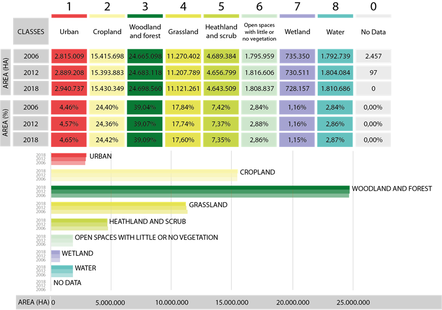
A look at the changes between the time steps 2006 – 2012 and 2012 – 2018 shown in the figure below (Overview total gains and losses per Level 1 class in ha and % for the periods 2006-2012 and 2012-2018 on European Level) reveals high dynamics in the classes Urban and Grassland, both in total numbers and percentage share. The observation period 2006 – 2012 indicates a considerable high increase of Urban areas (2,64%) whereas Grasslands decreased to a similar total area but a lesser percentage. A percentual high loss was also experienced by Wetlands and Heathland and moorlands.
The period 2012 – 2018 is dominated by the high decrease of the Grassland class, with even 0,21 percentage points more than the previous period, and a high increase of Urban area, even though to a lesser extent than in 2006 – 2012.
Comparing the two periods of observation, the decrease of Cropland between 2006 and 2012 is compensated by an increase in the following six years. Both classes, Urban and Grassland, continued their trend in opposite directions. Heathland and moorlands as well as Wetlands continue to loose area, even if to a slower ratio than in the subsequent period. The Open spaces with little or no vegetation class has experienced a reverse trend from an area gain between 2006-2012 to area loss in 2012-2018. One reason behind this may be the recovery of landscape after fire events. The figure also shows the declining area of No Data areas which reached zero in 2018. Since this cannot be considered a real change but is only resulting from a significant improvement in satellite data availability, it appears without bar in the graph.
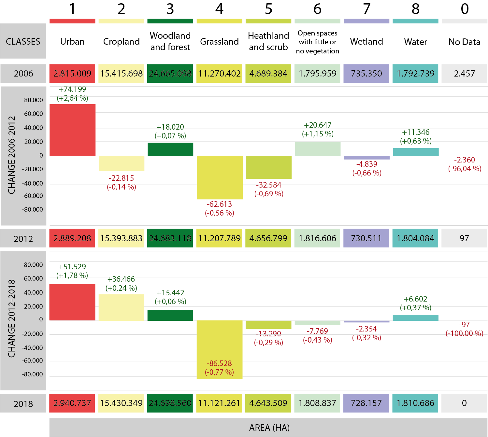
The figure below shows the most important pressures on grassland habitats for the 2012 – 2018 period. This helps to better understand the changes in the mapped area. The percentage of each pressure is related to the total area of changes.
The most prominent pressures are ‘Agricultural intensification’ (16%), Tree encroachment (16%) and ‘Agricultural conversion to cropland’ (14%) and followed by ‘Urbanization’ (13%). ‘Expansion of grassland’ (9%) remains the most important change process related to a grassland gain.
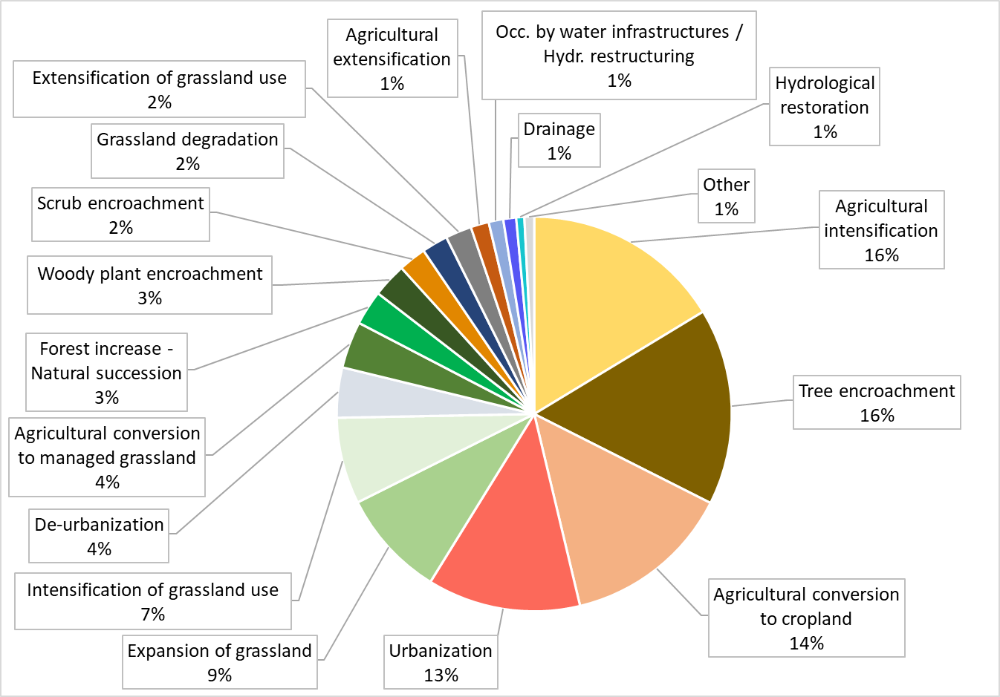
4.2 Measuring the effectiveness of EU Member States efforts for protecting Natura 2000 grasslands
In addition to the previous general assessment, Copernicus Land Monitoring Service is helping to support and measure the effectiveness of EU Member States and their efforts for protecting the increasingly important Natura 2000 grasslands.
When looking at the LC/LU inside the Natura 2000 sites, as compared to the 2 km buffer surrounding the sites, and as expected, the more anthropogenic land uses, such as urban and cropland, cover larger areas in the buffer zones as shown in the table below. In contrast, Natural and semi-Natural land cover is more abundant inside the sites. Grasslands are found to an almost equal extent in both areas because the class includes not only Natural and semi-Natural (species-rich) but also intensely managed (species-poor) grasslands, which are more comparable in their use to croplands.
Overall, a continuous loss of grasslands can be observed, and the trend is visible both in the buffer zone and the sites themselves, even though it is to a lesser amount in the latter.
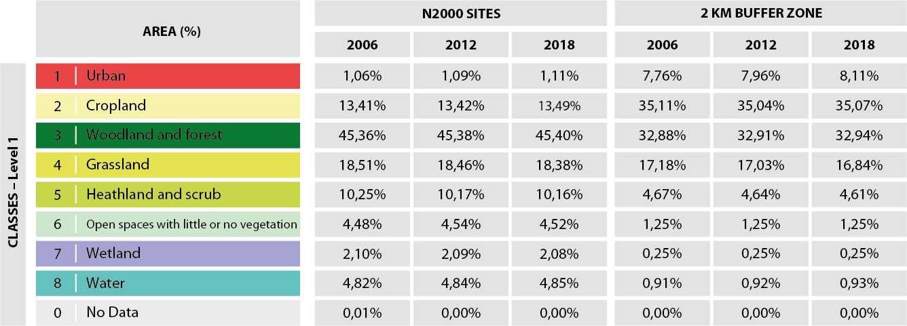
Other key findings (shown in the table below) include:
Grasslands showed a decline for two of the four different classes distinguished in the mapping. Managed grassland (class 4100) and Semi-Natural grassland with woody plants (class 4212) have the highest losses.
Alpine areas (4220) as the only type being more or less stable.
Semi-Natural grassland without woody plants (4211) experienced a gain for both reference periods.
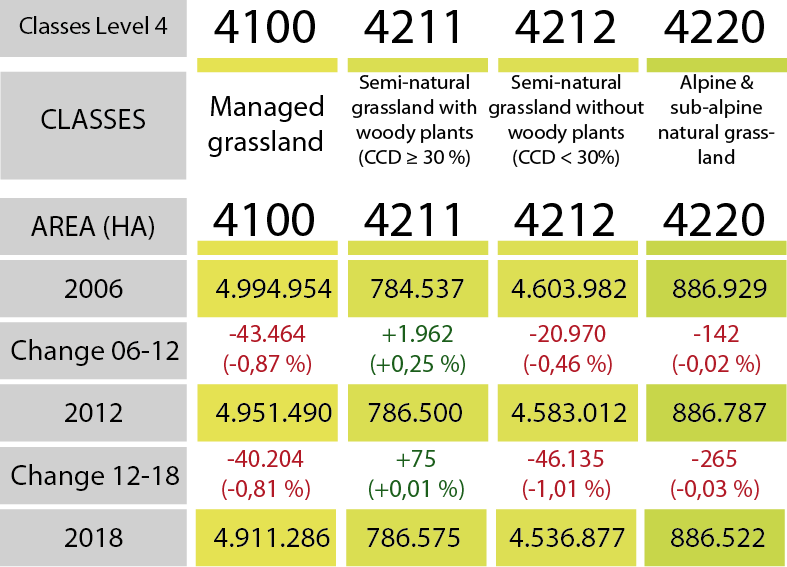
Looking at the data for Natura 2000 sites and buffer zones separately (Figure below), the grassland classes inside the Natura 2000 network can be seen to still be declining in area, apart from class 4211, which experienced slight gains in both periods, the reason for this most likely being land abandonment leading to shrub encroachment. In the buffer zone, classes 4100, 4212 and 4220 all decline more severely than inside the sites. The graph clearly shows once again that grassland cover seems overall to be subject to bigger changes outside Natura 2000 sites (i.e. in the buffer).
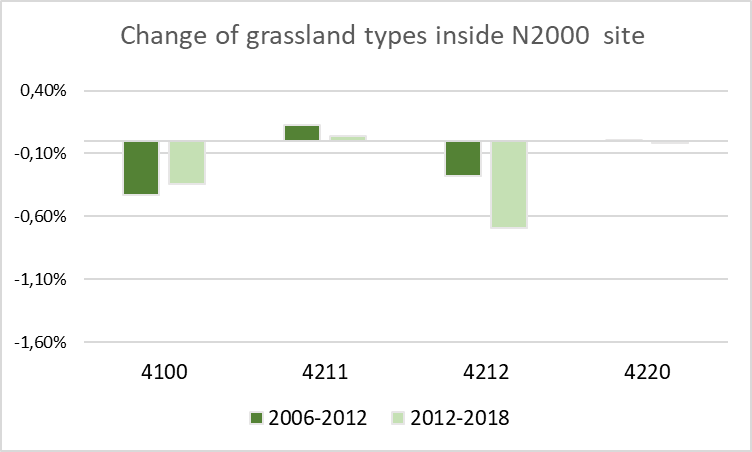
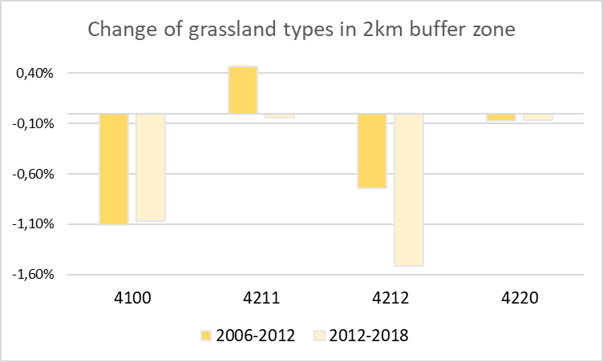
The N2K product allows us to recognise that good work is being done within Natura 2000 areas to lessen the decline of grasslands areas. However, it also tells us more work is required to protect these valuable areas, in particular with the continual monitoring of changing agricultural practices.
The Copernicus Land Monitoring Service (implemented by the European Environment Agency) is committed to the continual improvement of such monitoring schemes to address these challenges collectively. In particular, it is hoped that grasslands can not only be effectively preserved with N2K, but that the monitoring and assessment of biodiversity in line with the objectives of the EU Biodiversity Strategy to 2030 can also be achieved to the highest level. All of which will help ensure the continual protection of the vitally important Natura 2000 grasslands.
4.3 Use case: Green infrastructure (GI) network
The European Topic Centre on Urban, Land and Soil Systems (ETC-ULS) uses the CLMS N2K data for their study on assessing the contribution of GI to improving the conservation status of species of Community interest and the delivery of ecosystem services in Europe (ETC-ULS 2020). An integrated assessment on the distribution of GI, its multifunctional areas and the conservation status of a particular set of mammal species enable a mapping and prioritisation of where GI should be preserved, restored or further deployed, both within and outside of the Natura 2000 network. Thus, the work presented in their report is intended to improve and strengthen the information about GI mapping and contributes to several political strategies.
4.4 Use case: Copernicus for Natura 2000 (COP4N2K)
The project COP4N2K aims at developing a prototype to support monitoring and management of Natura2000 sites habitats with Copernicus. To guide the processing of the EO data and hold the results of the analysis a number of reference datasets were used. One of those datasets was the CLMS N2K, whose objects were used to hold the results of the EO analysis.
4.5 General product application area
The CLMS N2K product provides highly detailed and consistent information on Land Cover / Land Use (LC/LU ) for approximately 631.000 km² across Europe. It has a thematic depth of 55 different LC/LU classes with a Minimum Mapping Unit (MMU) and Minimum Mapping Width (MMW), i.e. the smallest area to be distinguished, of 0.5ha and 10m, respectively.
The product is available for the reference years 2006, 2012 and 2018 and allows due to its technical setup a direct analysis of LC/LU changes across time using a homogenous data source across Europe.
The hierarchical CLMS N2K LC/LU nomenclature is highly compatible to the CLMS Local Component Coastal Zone (CZ) and Riparian Zone (RZ) products. Depending on the LC/LU under investigation, these products could be jointly used to analyse LC/LC trends and changes.
5 Product description
5.1 Product overview
The CLMS N2K product contains two specific information layers for each reference year (Figure 1). The status layer describes the LC/LU situation in the relevant reference year. The change layer describes LC/LU change areas between two reference years. Currently status layers for the reference years 2006, 2012 and 2018 are available, with corresponding change layers for 2006-2012 and 2012-2018. The CLMS N2K product covers an area of 631.820 km² (Figure 2).
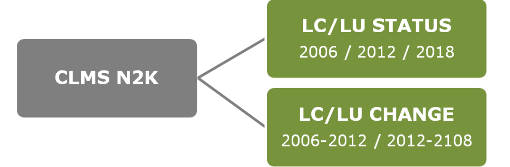
The CLMS N2K layers are provided as polygon vector data. They cover 4.790 Natura 2000 sites across Europe (Figure 2), including a 2km buffer zone around each site (Figure 3).
The LC/LU classification is based on visual image interpretation and delineation from Very High Resolution (VHR) satellite imagery. The characteristics of the product are the following:
LC/LU is encoded following a detailed mapping nomenclature and guideline (AD01) into 55 different classes using a hierarchical LC/LU encoding structure ranging from 8 LC/LU classes at Code level 1 to the full 55 classes at Code level 4
LC/LU classes are:
based on the MAES (Mapping and Assessment of Ecosystems and their Services) ecosystem types specification at Code level 1
largely compatible with CORINE Land Cover (CLC) and Urban Atlas and adapted to the specific characteristics of grasslands habitats (Code levels 2 to 4)
harmonized with CLMS Riparian Zones and Coastal Zones products.
Minimum Mapping Unit is 0.5ha
Minimum Mapping Width is 10m
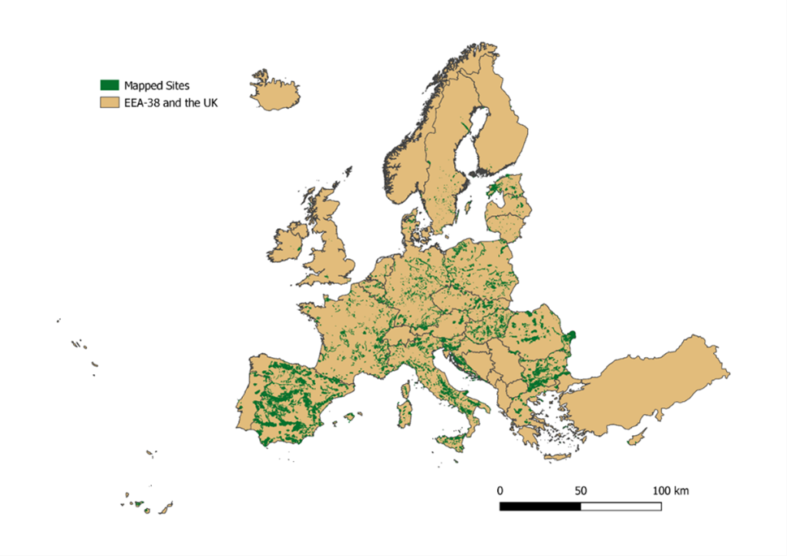
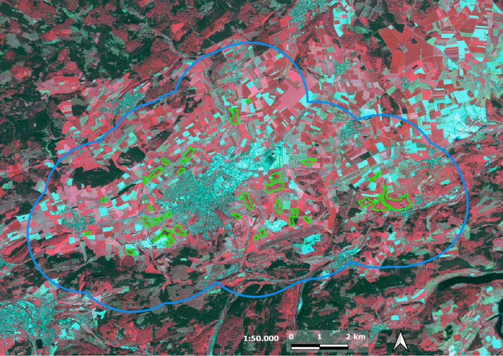
5.2 Selection of Natura 2000 sites
The selection of Natura 2000 sites to be mapped by the N2K product is based on the occurrence of grassland habitats within the sites. They cover 31 natural and semi-natural grassland formations as defined by Annex I of the Habitats Directive (Council Directive 92/43/EEC) (Table 1).
| 6110 Rupicolous calcareous or basophilic grasslands of the Alysso-Sedion albi |
| 6120 Xeric sand calcareous grasslands |
| 6130 Calaminarian grasslands of the Violetalia calaminariae |
| 6140 Siliceous Pyrenean Festuca eskia grasslands |
| 6150 Siliceous alpine and boreal grasslands |
| 6160 Oro-Iberian Festuca indigesta grasslands |
| 6170 Alpine and subalpine calcareous grasslands |
| 6180 Macaronesian mesophile grasslands |
| 6190 Rupicolous pannonic grasslands (Stipo-Festucetalia pallentis) |
| 6210 Semi-Natural dry grasslands and scrubland facies on calcareous substrates (Festuco-Brometalia) (* important orchid sites) |
| 6220 Pseudo-steppe with grasses and annuals of the Thero-Brachypodietea |
| 6230 Species-rich Nardus grasslands, on silicious substrates in mountain areas (and submountain areas in Continental Europe) |
| 6240 Sub-Pannonic steppic grasslands |
| 6250 Pannonic loess steppic grasslands |
| 6260 Pannonic sand steppes |
| 6270 Fennoscandian lowland species-rich dry to mesic grasslands |
| 6280 Nordic alvar and precambrian calcareous flatrocks |
| 62A0 Eastern sub-Mediterranean dry grasslands (Scorzoneratalia villosae) |
| 62B0 Serpentinophilous grassland of Cyprus |
| 62C0 Ponto-Sarmatic steppes |
| 62D0 Oro-Moesian acidophilous grasslands |
| 6310 Dehesas with evergreen Quercus spp. |
| 6410 Molinia meadows on calcareous, peaty or clayey-silt-laden soils (Molinion caeruleae) |
| 6420 Mediterranean tall humid grasslands of the Molinio-Holoschoenion |
| 6430 Hydrophilous tall herb fringe communities of plains and of the montane to alpine levels |
| 6440 Alluvial meadows of river valleys of the Cnidion dubii |
| 6450 Northern boreal alluvial meadows |
| 6460 Peat grasslands of Troodos* |
| 6510 Lowland hay meadows (Alopecurus pratensis, Sanguisorba officinalis) |
| 6520 Mountain hay meadows |
| 6530 Fennoscandian wooded meadows |
| 6540 Sub-Mediterranean grasslands of the Molinio-Hordeion secalini |
* grassland habitat type not covered in the N2K product within the 32 types listed in Annex I of the Habitats Directive
5.3 Representativity analysis
The final selection of Natura 2000 sites depended to a large extent also on the satellite data availability for 2006 and 2012 in order to avoid data gaps as much as possible. That led to the fact that the mapped Natura 2000 sites are neither equally distributed across Europe nor equally representative of the Member States or the Biogeographical regions: the distribution of the selected sites with a high representation are in South, South-western, Central and Eastern Europe whereas the Nordic countries and the British and Irish Isles are underrepresented.
Moreover, a considerable number of sites without designated grassland habitats and which were therefore not specifically selected for the mapping, still overlap with, or lie completely within the LC/LU mapping boundary (the designated AoI) that is defined by the outline of the selected N2K sites plus a 2 km buffer.
The boundaries of Member States with coastlines were extended 10km to the sea in order to assure full coverage of all the Natura 2000 sites chosen for the mapping. The additional area of coastal waters is included in every MS with marine area.
In a first assessment step, the number of sites per MS which are completely covered by the mapping area was compared to the total number of Natura 2000 sites of each MS.
The mapping area (Natura 2000 sites and buffer) includes sites which are completely covered, as well as some which are only partly covered by the N2K AoI. The number of completely mapped Natura 2000 sites was determined by the N2K LC/LU mapping boundaries. The intention is to show to what degree the Natura 2000 sites with designated grassland habitats of every MS are represented in the CLMS N2K mapping products.
Some sites, however, where not counted as completely mapped, if the GIS operation identified parts of non-coverage. This is often the case along the coastline, where the sea area has been cut out of the N2K AoI even though the Natura 2000 boundary actually extends a bit further into the open water. Further, the area mapped in every MS (Natura 2000 sites + buffer) is compared and put into relation with the calculated area, which may also include a 10km buffer of coastal waters, if applicable.
The first part of the assessment indicates a considerable high representation of Natura 2000 sites (disregarding their designated habitat types) for Hungary (44,38%), Italy (38,04%) and Bulgaria (37,46%) and very low representation of Finland (0,32%), United Kingdom (0,96%) and Ireland (0,99%), with an EU average of 17,17%.
When comparing the area of each MS national territory with the mapped area, Slovenia (42,19%) and Luxembourg (37,76%) as very small countries are at the top of the list but closely followed by large MS like Bulgaria (37,46%) and Spain (31,41%). Again, Finland (0,18%), the United Kingdom (0,33%) and Ireland (0,86%) are only covered to a fraction compared to the EU average of 13,52% (Table 2).
| Member state (MS) | Natura 2000 sites (total) | Natura 2000 sites completely mapped | Share of mapped sites | Total area mapped (km²) | Area MS (km²) | % of MS area |
|---|---|---|---|---|---|---|
| Austria | 350 | 53 | 15.14% | 8295.83 | 83927.63 | 9.88% |
| Belgium | 310 | 51 | 16.45% | 6152.43 | 31349.53 | 19.63% |
| Bulgaria | 339 | 127 | 37.46% | 40686.90 | 113948.15 | 35.71% |
| Croatia | 779 | 157 | 20.15% | 13312.80 | 75603.23 | 17.61% |
| Cyprus | 63 | 3 | 4.76% | 440.94 | 15931.60 | 2.77% |
| Czech Republic | 1153 | 160 | 13.88% | 8587.88 | 78869.90 | 10.89% |
| Denmark | 384 | 20 | 5.21% | 2750.28 | 71628.43 | 3.84% |
| Estonia | 567 | 120 | 21.16% | 12385.10 | 62545.91 | 19.80% |
| Finland | 1859 | 6 | 0.32% | 683.41 | 384010.79 | 0.18% |
| France | 1779 | 394 | 22.15% | 63840.30 | 585899.90 | 10.90% |
| Germany | 5200 | 767 | 14.75% | 47540.00 | 372524.70 | 12.76% |
| Greece | 446 | 34 | 7.62% | 12010.60 | 236245.66 | 5.08% |
| Hungary | 525 | 233 | 44.38% | 26189.30 | 94022.25 | 27.85% |
| Ireland | 604 | 6 | 0.99% | 786.51 | 91139.82 | 0.86% |
| Italy | 2613 | 994 | 38.04% | 78436.60 | 365392.96 | 21.47% |
| Latvia | 333 | 29 | 8.71% | 3418.80 | 73070.45 | 4.68% |
| Lithuania | 559 | 61 | 10.91% | 2565.31 | 72943.46 | 3.52% |
| Luxembourg | 66 | 20 | 30.30% | 980.15 | 2595.77 | 37.76% |
| Malta | 52 | 3 | 5.77% | 114.79 | 1717.87 | 6.68% |
| Netherlands | 196 | 9 | 4.59% | 1918.43 | 44292.10 | 4.33% |
| Poland | 984 | 242 | 24.59% | 45526.40 | 326678.13 | 13.94% |
| Portugal | 166 | 22 | 13.25% | 10444.80 | 113707.07 | 9.19% |
| Romania | 606 | 105 | 17.33% | 38392.70 | 249883.33 | 15.36% |
| Slovakia | 683 | 161 | 23.57% | 9635.40 | 49665.16 | 19.40% |
| Slovenia | 355 | 80 | 22.54% | 8637.47 | 20473.70 | 42.19% |
| Spain | 1863 | 569 | 30.54% | 174763.00 | 556466.17 | 31.41% |
| Sweden | 4087 | 352 | 8.61% | 9476.23 | 495428.75 | 1.91% |
| Switzerland | 37 | 3 | 8.11% | 938.88 | 41280.13 | 2.27% |
| United Kingdom | 935 | 9 | 0.96% | 1078.16 | 326416.02 | 0.33% |
| TOTAL | 27893 | 4790 | 17.17% | 629989.41 | 5037658.58 | 13.52%* |
²MS size is overestimated due to the sea buffer calculation. Since the Eastern European countries, which are not member of the EEA 39, are not included in the layer, the neighbouring countries were treated as sea and buffered with 10km into the neighbouring country.
*Average taken from all MS. The percentage of comparing the sum of all calculated MS areas with the total mapped area would be roughly 8%.
The focus of the CLMS N2K mapping was put on sites with grassland habitats. These are considered as especially rich in biodiversity and face a declining trend in most parts of the Member States. Table 3 below gives an overview of the number of sites which contain at least one declared type of grassland type (according to the Natura 2000 Standard Data Forms) and its coverage by the LC/LU mapping.
The assessment of the representativeness of sites with grassland habitats produces a high number for Slovenia (71,64%), Croatia (57,97%) and Bulgaria (56,50%). A low representativeness of grassland habitats is found in Finland (1,85%), the United Kingdom (3,93%) and Ireland (6,76%). In some MS, also a considerable high number of sites with grassland habitats is partly mapped and, in some MS, the percentage of these sites which are not mapped at all is comparably high, e.g. Austria, Cyprus, Denmark, Sweden and the Netherlands. Note that this table includes all sites which were listed in the year 2018 and the number of grassland sites may have been lower when the sites were chosen for the 2006-2012 mapping.
Grassland sites:
| Member State | Total | Not Mapped | Partly Mapped | Completely Mapped | % of Completely Mapped Sites |
|---|---|---|---|---|---|
| Austria | 199 | 141 | 19 | 39 | 19,60% |
| Belgium | 263 | 139 | 75 | 49 | 18,63% |
| Bulgaria | 177 | 28 | 49 | 100 | 56,50% |
| Croatia | 138 | 41 | 17 | 80 | 57,97% |
| Cyprus | 27 | 24 | 0 | 3 | 11,11% |
| Czech Republic | 303 | 161 | 38 | 104 | 34,32% |
| Denmark | 175 | 132 | 29 | 14 | 8,00% |
| Estonia | 243 | 85 | 54 | 104 | 42,80% |
| Finland | 271 | 256 | 10 | 5 | 1,85% |
| France | 1103 | 557 | 219 | 327 | 29,65% |
| Germany | 3001 | 1761 | 602 | 638 | 21,26% |
| Greece | 120 | 72 | 20 | 28 | 23,33% |
| Hungary | 410 | 110 | 76 | 224 | 54,63% |
| Ireland | 74 | 68 | 1 | 5 | 6,76% |
| Italy | 1932 | 638 | 343 | 951 | 49,22% |
| Latvia | 130 | 99 | 7 | 24 | 18,46% |
| Lithuania | 179 | 112 | 15 | 52 | 29,05% |
| Luxembourg | 48 | 16 | 14 | 18 | 37,50% |
| Malta | 5 | 1 | 4 | 0 | 0,00%² |
| Netherlands | 100 | 79 | 14 | 7 | 7,00% |
| Poland | 522 | 237 | 74 | 211 | 40,42% |
| Portugal | 83 | 49 | 12 | 22 | 26,51% |
| Romania | 197 | 77 | 44 | 76 | 38,58% |
| Slovakia | 437 | 219 | 84 | 134 | 30,66% |
| Slovenia | 67 | 7 | 12 | 48 | 71,64% |
| Spain | 1152 | 346 | 316 | 490 | 42,53% |
| Sweden | 1480 | 1101 | 79 | 300 | 20,27% |
| Switzerland | n/a | n/a | n/a | n/a | n/a |
| United Kingdom | 178 | 165 | 6 | 7 | 3,93% |
| TOTAL | 13014 | 6721 | 2233 | 4060 | 31,20% |
² Four sites were chosen for LC/LU mapping but due to spatial query settings, those were registered as “partly mapped”. Manual checks produced a coverage of 4 out of the 5 grasslands sites, resulting in an 80% grassland site coverage.
Switzerland as non-EU state is listed in the table because of three Emerald sites there located which are included in the N2K product however it was not included in the representativeness assessment. The Emerald network have some similarities to Natura 2000 network but do not follow exactly the same criteria.
The low numbers of some MS in the two sections of the representativeness assessment are seen as an important indicator for how the results related to these MS can be assessed. In these cases, a projection of the results which derived from a small number of sites, may not represent the situation on the national level.
In conclusion, the mapped Natura 2000 sites are neither equally distributed across Europe nor equally representative of the MS or the Biogeographical regions. The distribution of the selected sites with a high representation are in South, South-western, Central and Eastern Europe whereas the Nordic countries and the British and Irish Isles are underrepresented.
5.4 Natura 2000 boundary changes and the impact in the CLMS N2K product Area of Interest (AoI)
The AoI for mapping the LC/LU was setup, changed and extended throughout the evolution of the CLMS N2K product, in three different phases:
First, during the initial setup of the N2K AoI under the GIO project phase (GMES Initial Operation Phase in 2014) a selection of Natura 2000 grassland-rich sites (representing five grassland habitats types, namely, 6210, 6240, 6250, 6510 and 6520) as identified in Annex I of the Habitats Directive was used;
A list of Natura 2000 sites was proposed by EC DG ENV on the basis of their representativeness and relative importance for the given habitat types. The information for selecting sites on the basis of the above criteria has been taken from the Natura 2000 sites’ Standard Data Forms in the most recent version of the EU-wide Natura 2000 database at the time;
Based on this list of Natura 2000 site codes the corresponding site boundaries were extracted from the Natura 2000 Database (version: Natura 2000 v2013). This led to an AOI area of around 150.800 km²;
A GIS- and EO data analysis was then performed to:
Buffer the Natura 2000 sites by 2km, which increased the N2K AOI area to around 252.600 km²)
Identify existing VHR satellite coverage for the reference years 2006 +/- 1 year (with extension to +/- 2 years for gap-filling) and 2012 +/- 2 years within defined seasonal windows, so that in combination they reach > 80% coverage of the full (buffered) N2000 site size (i.e. in the same areas, for both time steps). This reduced the AOI to around 162.600 km² - 173.800 km²
The finally mapped N2K product during the GIO Phase covered 160.443 km².
In the second production phase (started in 2016) the N2K AOI was enlarged. Additional Natura 2000 sites were selected, now based on a list of 32 different Annex 1 grassland habitat types as defined under the Habitats Directive. The additional Natura 2000 site boundaries were again taken from the Natura 2000 Database (this time from version: end2015). The buffer was applied to the newly selected sites and minor adaptations to the N2K AoI were made to correct imprecisions and omission errors. This changed the AoI size and geometry in a way that:
Missing 2km buffers were included, for mainly buffers around islands were missing
Wrongly clipped buffers of selected N2K sites were included
Existing gaps between N2K sites shapefile and EEA39 member states boundary shapefile were filled. Regarding water areas, those gaps over water appeared if EEA39 boundaries do not coincide with N2K site boundaries along coastlines and had also to be corrected and included
Minor gaps and spikes between the AoIs of the first and second phases were corrected and included
Small angles (<20°) were checked and corrected where feasible.
In the end of the second production phase, the existing 160.443km² were complemented by 471.377 km² leading to the N2K product covering 631.820 km² for the reference years 2006 and 2012.
In the third production phase (started in 2020 and finished in May 2021) the N2K product is updated to the reference year 2018, including the change layer 2012-2018. No changes were applied to the geographic coverage of the product.
The option taken for the N2K product was to have a stable AoI so that the change mapping exercise could be done within the same area and that the derived statistics were not affected by changing AoI’s.
As can be seen from the above “history” of the N2K AoI creation process, there were several input data sets used as well as several geospatial corrections applied to generate the currently used N2K coverage of 631.820km². As stated above there are several factors which prevent a 1:1 relation between the N2K AoI and Natura 2000 site boundaries:
Different Natura 2000 database versions were applied to generate the unbuffered N2K site selection (version Natura 2000 v2013 and later version end2015). Changes in the yearly updated Natura 2000 site definitions were not adapted for already mapped N2K sites (Figure 4)
N2K AoI adaptations to achieve a technically “clean” dataset may have led to deviations from a strict 2km buffer zone around each selected Natura 2000 site.
The availability of archived VHR satellite data for the reference years 2006 and 2012 required a threshold to produce N2K LC/LU information also for Natura 2000 sites covered by up to a minimum of 80% satellite data.
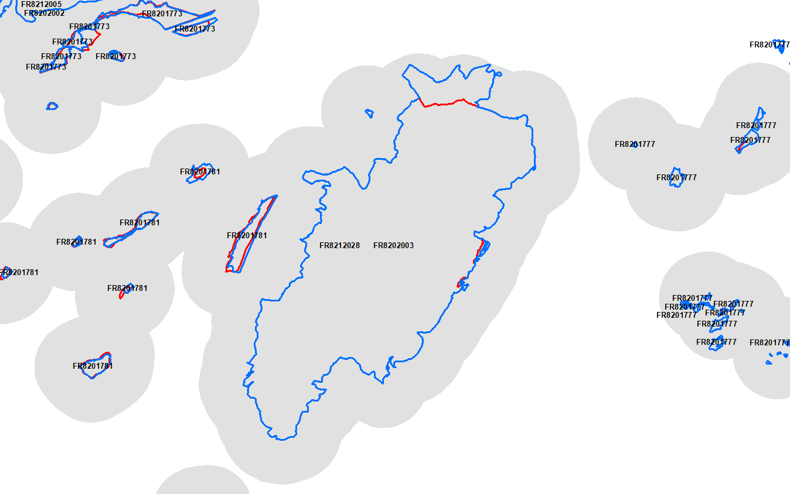
Also, due to the buffering of the Natura 2000 sites by 2km, the N2K sites may actually cover more than one Natura 2000 site (Figure 5). This has been one the reasons for the removal of the Natura 2000 Site code from the N2K AoI, to avoid a misinterpretation of the data. Because within the same N2K polygon there could be reference to more than one Natura 2000 site.
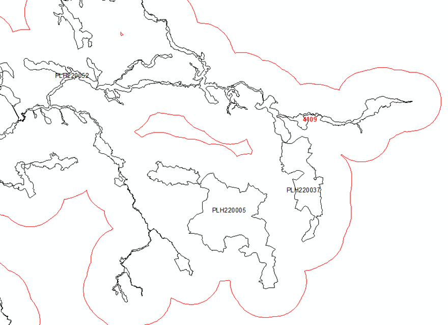
To quantify the effects of the changing Natura 2000 Database on the N2K products a spatial analysis of the Natura 2000 database changes between 2015 and 2018 was performed.
During the data preparation it became evident, that the Natura 2000 databases are more complex than expected. The Natura 2000 sites are very often defined as “multi-part” polygons (Figure 6). This means that multiple detached areas form together one Natura 2000 site. Due to the above described N2K AoI creation process, Natura 2000 sites are not always covered by the N2K product for all their single areas. This is an important fact, if N2K products are related to Standard Data Form (SDF) information, e.g. Habitat coverage within site, which relates to the complete Natura 2000 site.
For this all Natura 2000 sites affected by the full N2K AoI were selected from the 2015 Natura 2000 Database (version: end2015). This resulted in 3872 different site codes. Performing the same process to the 2018 Natura 2000 Database (version: end2018) led to 3868 site codes. Four site codes have changed between 2015 and 2018. Here the Natura 2000 sites had a newer release data. This was for example the case for the Danish site code DK00BX044 in 2015, which was split up into two new site codes DK00BB396 and DK00BB380 (Figure 7). The four changed site codes were also included in the spatial analysis of the 2018 data.
Other Natura 2000 DB changes led to a partial coverage of 2018 geometries of formerly fully covered in 2015 (Figure 8). Partially these changes might still be covered by the N2K AoI, but initially the original 2km buffer around the site is no longer valid for the complete site (Figure 9).
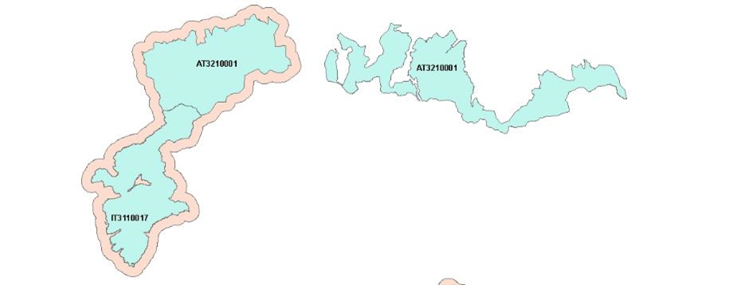
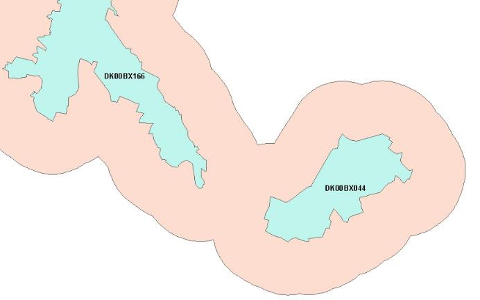
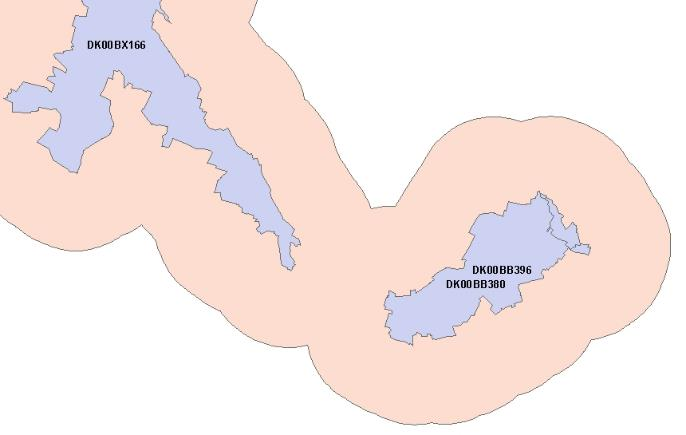
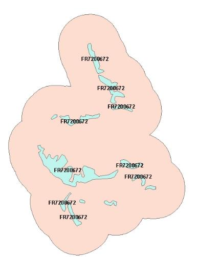
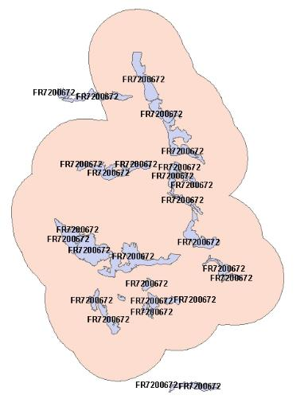
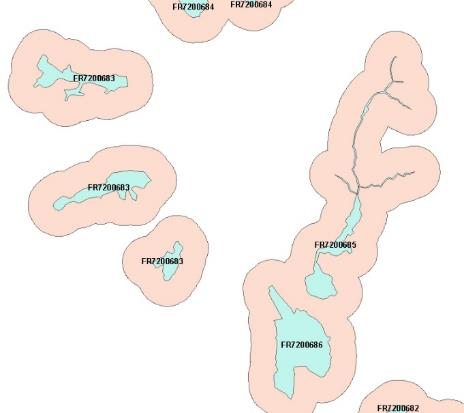
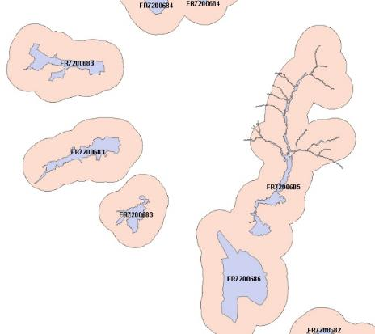
The Natura 2000 site boundaries were intersected with the N2K AoI for both years to analyse the total area covered by the Natura 2000 sites, and their spatial overlap with the N2K AoI. Due to the fact that there are overlapping geometries in the Natura 2000 sites DB (Figure 10), the analysis was performed also with the Natura 2000 sites merged to one analysis extent.
The results showed that more than 98% of the area covered by the selected grassland-rich Natura 2000 sites is covered by the N2K product in for both Natura 2000 site definitions, version end2015 and end2018 (Figure 5).
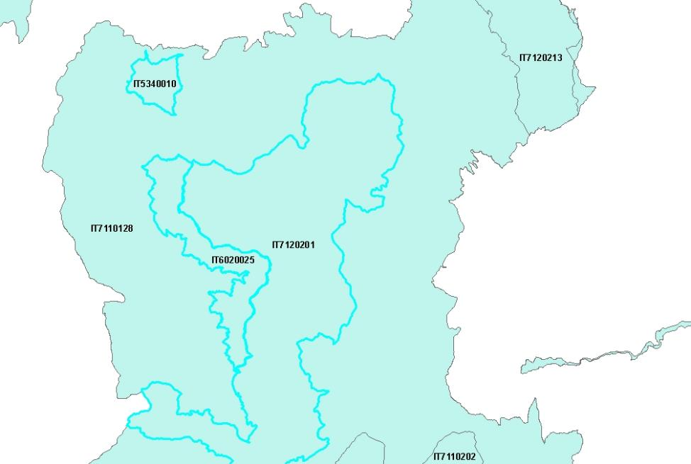
| 2015 | 2018 | Difference 2015-2018 | |
|---|---|---|---|
| Total area of Natura 2000 sites (with overlaps) [km²] | 284.195,48 | 284.977,85 | + 782,37 |
| Total area of Natura 2000 sites (without overlaps) [km²] | 272.483,95 | 273.266,93 | + 782,98 |
| Area of Natura 2000 sites (without overlap) covered by N2K AOI [km²] | 267.820,37 | 268.167,05 | + 346,68 |
| Percentage of Natura 2000 area covered by N2K AOI (without overlaps) [%] | 98,3 | 98,1 | - 0,2 |
Comparing the spatial dynamics of the 2015 and 2018 Natura 2000 site boundaries in comparison to the current N2K AOU showed that the selected sites in the 2018 Natura 2000 DB had around 537 km² area removed, which was still contained in the 2015 DB version, whereas around 1.320 km² were newly added in the 2018 DB version. Of this newly added area, 66% was still covered by the unchanged N2K AOI (Figure 6).
| Natura 2000 area changes 2015-2018 | Value | |
|---|---|---|
| Common area in 2015 and 2018 | 271.946,91 km² | |
| Area only in 2015 data (removed) | 537,04 km² | |
| Area only in 2018 data (new) | 1320,02 km² | |
| covered by N2K AOI (Inside) | 871,79 km² (66 %) | |
| not covered by N2K AOI (Outside) | 448,23 km² (44 %) |
The boundaries of Natura 2000 may change from year to year but usually those are not dramatic changes and are usually covered by the 2km buffer zone. There are however a few occasions when a change in extent may have gone over the N2K established AoI. Extreme situation illustrated below (Figure 11)
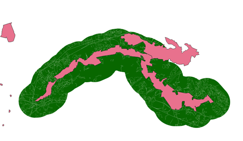
This was one of the reasons why it was decided to remove the Natura 2000 site boundary from the N2K product: to allow users to use the N2K LC/LU product in combination with the Natura 2000 latest boundary, if they wish so in their dedicated assessments therefore not being bound by an outdated outline that may change on a yearly basis.
5.5 CLMS N2K status layer
The N2K status layer represents the LC/LU status identified on the available satellite images for the specific reference year (Figure 12).
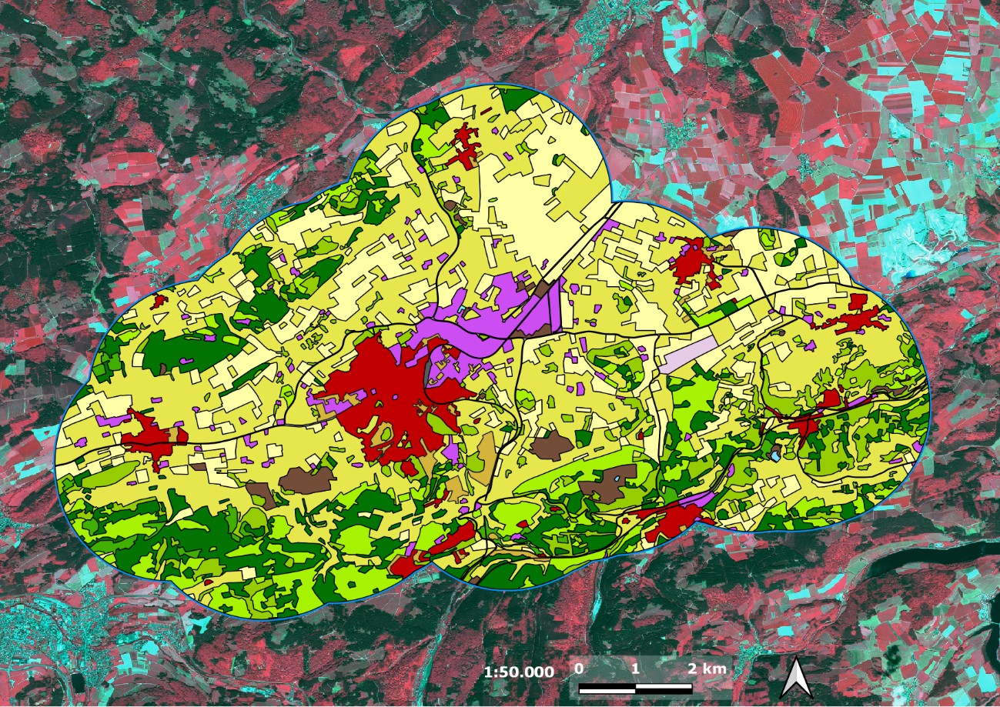
5.6 CLMS N2K change layer
The CLMS N2K change layer represents the LC/LU changes between the specific reference years and identifiable on the satellite images (Figure 13).
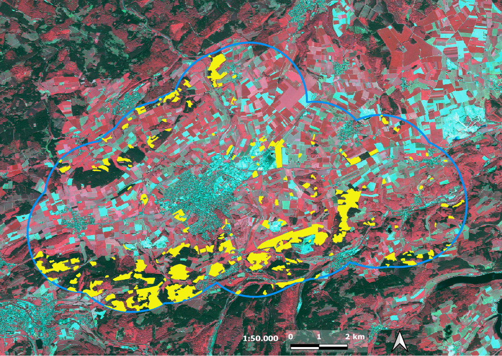
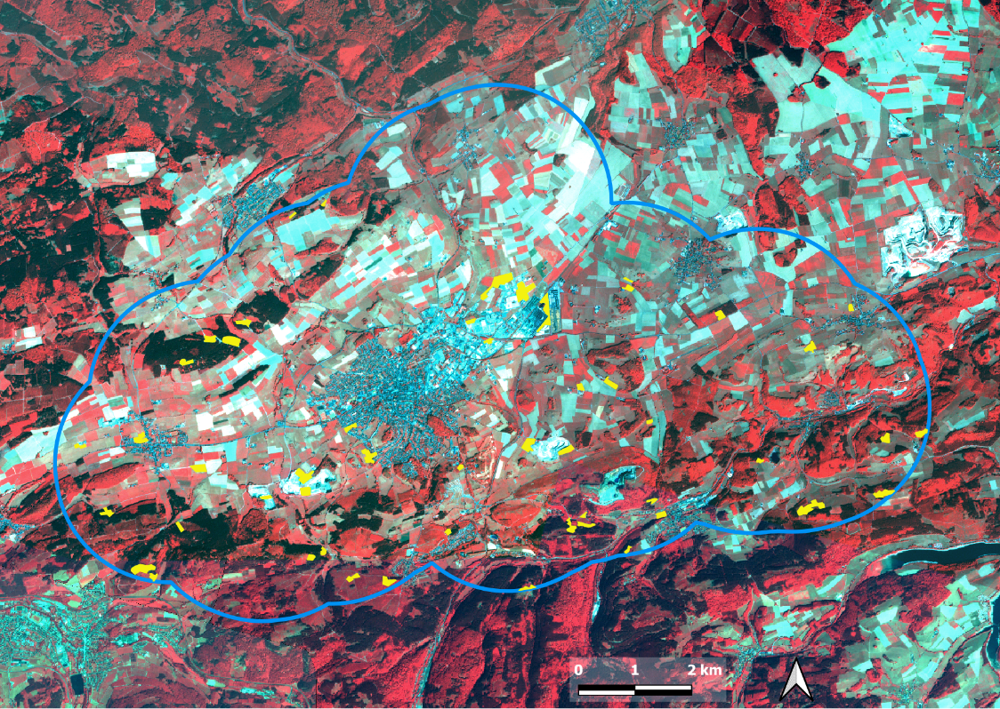
5.7 Technical specification
Table 6 summarizes the technical specifications of the N2K product.
| Specification | LC/LU status 2018 | LC/LU status 2012 (revised) | LC/LU status 2006 (revised) | LC/LU change 2006–2012 (revised) | LC/LU change 2012–2018 |
|---|---|---|---|---|---|
| Temporal description (VHR coverage reference dates) | 2018 (± 1 year) | 2012 (± 2 years, due to data availability) | 2006 (± 2 years, due to data availability) | 2006 and 2012 | 2012 and 2018 |
| Overall thematic classification accuracy: LC/LU status and change layers | ≥ 85 % overall accuracy | ≥ 85 % overall accuracy | ≥ 85 % overall accuracy | ≥ 85 % overall accuracy | ≥ 80 % overall accuracy |
| ≥ 80 % for class specific user and producer accuracies | ≥ 80 % for class specific user and producer accuracies | ≥ 80 % for class specific user and producer accuracies |
| Specification | Applicable to all LC/LU statuses |
|---|---|
| Geographic Coverage | ~ 631 820 km² across EU27 and the UK and Switzerland (N2K sites including 2km buffer); including three Emerald sites in Switzerland |
| Minimum Mapping Unit (MMU) | 0.5 ha* |
| Minimum Mapping Width (MMW) | 10 m** |
| Nomenclature | CLMS N2K Nomenclature and Mapping Guideline (Issue 1.4) |
| Projection | ETRS89 Lambert Azimuthal Equal Area (LAEA) (EPSG 3035) |
| Delivery format | LC/LU data: ESRI file geodatabase and GeoPackage, containing the three status (2006,2012,2018) and two change layers (2006–2012, 2012–2018) |
| Ancillary information layer | Parent Scene Identification Layer (PSIL); vector file containing spatial reference information on the satellite images used for producing the LC/LU map (on demand – send email to copernicus@eea.europa.eu) |
| Positional accuracy | RMSE ≤ 5 meters |
* Some exceptions are allowed for polygons at the product boundary and polygons inside the boundary related to linear networks or urban areas and for change polygons in very specific cases.
** Exceptions of 10m over a distance of up to 100m are allowed to maintain continuity of features with mostly linear nature.
The CLMS N2K products are delivered as polygon vector data for the reference years over the selected sites across Europe. Each product is delivered as a separate data set, following a uniform technical specification. The content of a download package is explained below:
Each download package is a *.zip file which contains three folders:
DATA (contains the data files in fgdb and geoPackage formats):
LC/LU status map 2006: LC/LU based on the analysis of satellite images from the reference year period 2006.
- File name: N2K_2006_3035_v010
- File name: N2K_2006_3035_v010
LC/LU status map 2012: LC/LU based on the analysis of satellite images from the reference year period 2012.
- File name: N2K_2012_3035_v010
- File name: N2K_2012_3035_v010
LC/LU status map 2018: LC and LU classification based on the analysis of satellite images from the reference year period 2018.
- File name: N2K_2018_3035_v010
- File name: N2K_2018_3035_v010
LC/LU change map 2006-2012: based on the outputs of the 2012 and 2006 status layers.
- File name: N2K_Change_2006_2012_3035_v010
- File name: N2K_Change_2006_2012_3035_v010
LC/LU change map 2012-2018: LC/LU change information based on the comparison of satellite images from the reference year periods 2012 and 2018. The production of this product is the basis for the status map for 2018 as well as for the revision of the previous time steps 2012 and 2006.
- File name: N2K_Change_2012_2018_3035_v010
- File name: N2K_Change_2012_2018_3035_v010
SYMBOLOGY
Contains symbology files in three formats: lyr, sld and qml
- METADATA
Contains metadata file in XML format
FILE NAMING CONVENTION:
The filename is composed of a combination of information about the data theme, the reference year/reference period, EPSG code and version number.
| THEME| REFERENCE YEAR/REFERENCE PERIOD | EPSG CODE | VERSION
THEME:
- theme refers to specific layer type: N2K - refers to status layer, N2K_Change - refers to change layer
REFERENCE YEAR:
- reference year refers to the year for which N2K information included in the file were mapped: 2006, 2012, 2018,
REFERENCE PERIOD:
- reference period refers to the period for which N2K change information were mapped: 2006-2012, 2012-2018
All products contain information on the LC/LU class as well as auxiliary information (e.g. on temporal dynamics of the mapped polygon, or change related area size exceptions). The attribute information is given per polygon following a standardized attribution scheme (Table 7 and Table 8).
| Field | Description | Type | Value(s) | Applicable Products |
|---|---|---|---|---|
| [OBJECTID] | Dynamic Feature Identifier | Object ID | 0 to 2.147.483.647 | Status, Change |
| [Shape] | Polygon (default by ESRI) | Geometry | Polygon | Status, Change |
| [UID] | Unique Identifier of the feature geometry, generated as combination of OBJECTID and DeliveryUnit-ID in the form of “ID_OBJECTID+1” | String, Length 20 | Starting from 1_1 | Status, Change |
| [CODE_1_18] | Class code of LC/LU Level 1 for LC/LU 2018 | Long, Precision 9 | 1 to 10 | Status, Change |
| [CODE_2_18] | Class code of LC/LU Level 2 for LC/LU 2018 | Long, Precision 9 | 11 to 101 | Status, Change |
| [CODE_3_18] | Class code of LC/LU Level 3 for LC/LU 2018 | Long, Precision 9 | 111 to 1011 | Status, Change |
| [CODE_4_18] | Class code of LC/LU Level 4 for LC/LU 2018 | Long, Precision 9 | 1111 to 10111 | Status, Change |
| [COMMENT_18] | Comment field for additional information for LC/LU 2018 | String, Length 254 | Standardized text comments, separated by Semicolon | Status |
| [NODATA_18] | Unclassifiable area due to clouds, shadows, snow, haze or missing data (no satellite data available) | Long, Precision 9 | 0,1 | Status, Change |
| [CODE_1_12] | Class code of LC/LU Level 1 for LC/LU 2012 | Long, Precision 9 | 1 to 10 | Status, Change |
| [CODE_2_12] | Class code of LC/LU Level 2 for LC/LU 2012 | Long, Precision 9 | 11 to 101 | Status, Change |
| [CODE_3_12] | Class code of LC/LU Level 3 for LC/LU 2012 | Long, Precision 9 | 111 to 1011 | Status, Change |
| [CODE_4_12] | Class code of LC/LU Level 4 for LC/LU 2012 | Long, Precision 9 | 1111 to 10111 | Status, Change |
| [COMMENT_12] | Comment field for additional information for LC/LU 2012 | String, Length 254 | Standardized text comments, separated by Semicolon | Status |
| [NODATA_12] | Unclassifiable area due to clouds, shadows, snow, haze or missing data (no satellite data available) | Long, Precision 9 | 0,1 | Status, Change |
| [CODE_1_06] | Class code of LC/LU Level 1 for LC/LU 2006 | Long, Precision 9 | 1 to 10 | Status, Change |
| [CODE_2_06] | Class code of LC/LU Level 2 for LC/LU 2006 | Long, Precision 9 | 11 to 101 | Status, Change |
| [CODE_3_06] | Class code of LC/LU Level 3 for LC/LU 2006 | Long, Precision 9 | 111 to 1011 | Status, Change |
| [CODE_4_06] | Class code of LC/LU Level 4 for LC/LU 2006 | Long, Precision 9 | 1111 to 10111 | Status, Change |
| [COMMENT_06] | Comment field for additional information for LC/LU 2006 | String, Length 254 | Standardized text comments, separated by Semicolon | Status |
| [NODATA_06] | Unclassifiable area due to clouds, shadows, snow, haze or missing data (no satellite data available) | Long, Precision 9 | 0,1 | Status, Change |
| [CHANGECODE] | Change Class code of LC/LU Level 4 for LC/LU 2006–2012 (CODE_4_06_CODE_4_12) or 2012–2018 (CODE_4_12_CODE_4_18) | String, Length 11 | 1111_1111 to 10111_10111 | Change |
| [COMMENT] | Comment field for additional information for change products LC/LU 2006–2012, 2012–2018 | String, Length 254 | Standardized text comments, separated by Semicolon | Change |
| [AREA_HA] | Area in hectare [ha] | Double | 0.001 to 1.8E308 | Status, Change |
| Field | Description | Type | Value(s) | Status, Change |
|---|---|---|---|---|
| [OBJECTID] | Dynamic Feature Identifier | Object ID | 0 to 2.147.483.647 | Status, Change |
| [Shape] | Polygon (default by ESRI) | Geometry | Polygon | Status, Change |
| [UID] | Unique Identifier of the feature geometry, generated as combination of OBJECTID and DeliveryUnit-ID in the form of “ID_OBJECTID+1” | String, Length 20 | Starting from 1_1 | Status, Change |
| [CODE_1_18] | Class code of LC/LU Level 1 for LC/LU 2018 | Long, Precision 9 | 1 to 10 | Status, Change |
| [CODE_2_18] | Class code of LC/LU Level 2 for LC/LU 2018 | Long, Precision 9 | 11 to 101 | Status, Change |
| [CODE_3_18] | Class code of LC/LU Level 3 for LC/LU 2018 | Long, Precision 9 | 111 to 1011 | Status, Change |
| [CODE_4_18] | Class code of LC/LU Level 4 for LC/LU 2018 | Long, Precision 9 | 1111 to 10111 | Status, Change |
| [COMMENT_18] | Comment field for additional information for LC/LU 2018 | String, Length 254 | Standardized text comments, separated by Semicolon | Status |
| [NODATA_18] | Unclassifiable area due to clouds, shadows, snow, haze or missing data (no satellite data available) | Long, Precision 9 | 0,1 | Status, Change |
| [CODE_1_12] | Class code of LC/LU Level 1 for LC/LU 2012 | Long, Precision 9 | 1 to 10 | Status, Change |
| [CODE_2_12] | Class code of LC/LU Level 2 for LC/LU 2012 | Long, Precision 9 | 11 to 101 | Status, Change |
| [CODE_3_12] | Class code of LC/LU Level 3 for LC/LU 2012 | Long, Precision 9 | 111 to 1011 | Status, Change |
| [CODE_4_12] | Class code of LC/LU Level 4 for LC/LU 2012 | Long, Precision 9 | 1111 to 10111 | Status, Change |
| [COMMENT_12] | Comment field for additional information for LC/LU 2012 | String, Length 254 | Standardized text comments, separated by Semicolon | Status |
| [NODATA_12] | Unclassifiable area due to clouds, shadows, snow, haze or missing data (no satellite data available) | Long, Precision 9 | 0,1 | Status, Change |
| [CODE_1_06] | Class code of LC/LU Level 1 for LC/LU 2006 | Long, Precision 9 | 1 to 10 | Status, Change |
| [CODE_2_06] | Class code of LC/LU Level 2 for LC/LU 2006 | Long, Precision 9 | 11 to 101 | Status, Change |
| [CODE_3_06] | Class code of LC/LU Level 3 for LC/LU 2006 | Long, Precision 9 | 111 to 1011 | Status, Change |
| [CODE_4_06] | Class code of LC/LU Level 4 for LC/LU 2006 | Long, Precision 9 | 1111 to 10111 | Status, Change |
| [COMMENT_06] | Comment field for additional information for LC/LU 2006 | String, Length 254 | Standardized text comments, separated by Semicolon | Status |
| [NODATA_06] | Unclassifiable area due to clouds, shadows, snow, haze or missing data (no satellite data available) | Long, Precision 9 | 0,1 | Status, Change |
| [CHANGECODE] | Change Class code of LC/LU Level 4 for LC/LU 2006–2012 (CODE_4_06_CODE_4_12) or 2012–2018 (CODE_4_12_CODE_4_18) | String, Length 11 | 1111_1111 to 10111_10111 | Change |
| [COMMENT] | Comment field for additional information for change products LC/LU 2006–2012, 2012–2018 | String, Length 254 | Standardized text comments, separated by Semicolon | Change |
| [AREA_HA] | Area in hectare [ha] | Double | 0.001 to 1.8E308 | Status, Change |
The standardized entries for [COMMENT], [COMMENT_18], [COMMENT_12] and [COMMENT_06] are separated by a semicolon in increasing order following their “Order No” (Table 9).
| Order No | Entry Value | Description / Note | Applicable Products |
|---|---|---|---|
| 1 | Area size exception (at Natura2000 AoI boundary) | Polygons < 0.5 ha at outer AoI site boundary, that have an apparent continuation outside the AoI boundary, which is visible on the image data. | Status, Change |
| 2 | Area size exception (inside Natura2000 AoI boundary) | Polygons < 0.5 ha inside AoI site boundary, that are allowed due to nomenclature guideline rules e.g. to represent changes, to ensure continuity of road/rail/river network at intersections of these classes, to mark urban objects confined by roads or railways ≥ 0.25 ha up to < 0.5 ha | Status, Change |
| 3 | Splitted change | Changes over several classes. Each change is < 0.5 ha but overall change (=sum of individual change areas) is > 0.5 ha. | Change |
| 4 | Areas related to change | Polygons < 0.5 ha with no change but connected to change polygons (same code at a neighbouring polygon in one of the two years). | Status |
| 5 | Temporal fluctuation of water level | Different water levels in comparison of image data taken during dry/wet season and conditions. The water level situation of the reference year 2012 should be used for delineation. A flood event is not considered as a “Temporal fluctuation of water level”. | Status, Change |
| 6 | Flooded area | Used for extraordinary flooding events where non-water land cover features are covered (partly or fully) by water. Comment is applied only in the year of the flooding event. | Status, Change |
| 7 | Braided River | For river banks that are crossed by side arms of a river. Only valid for MAES_4 Code 6213 (river banks). | Status, Change |
5.8 CLMS N2K nomenclature
The Nomenclature for the LC/LU dataset is structured into four levels (Code level 1- Code level 4). There are 55 different LC/LU classes (Table 10). The detailed description of each class is given in the N2K nomenclature and mapping guideline (AD01). The LC/LU code levels were designed to correspond to the Mapping and Assessment of Ecosystems and their Services (MAES) typology Level 2 (EU 2013).
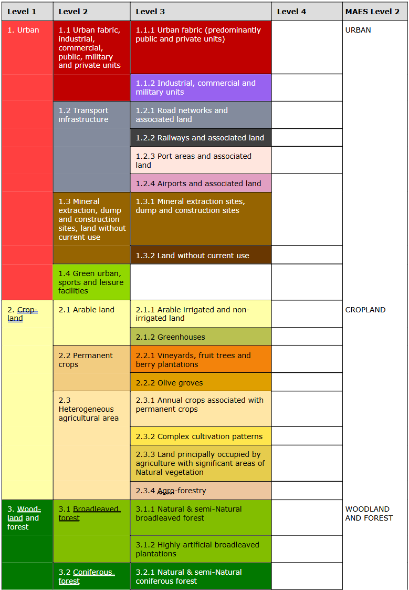
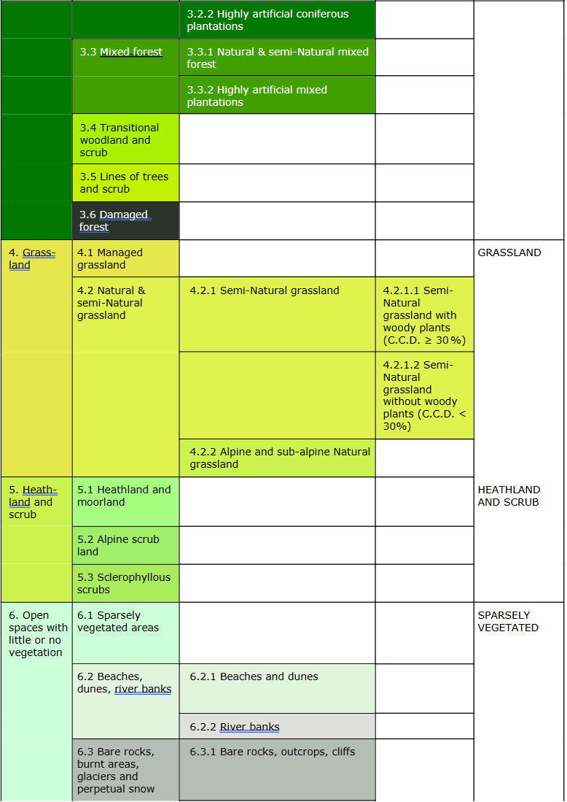
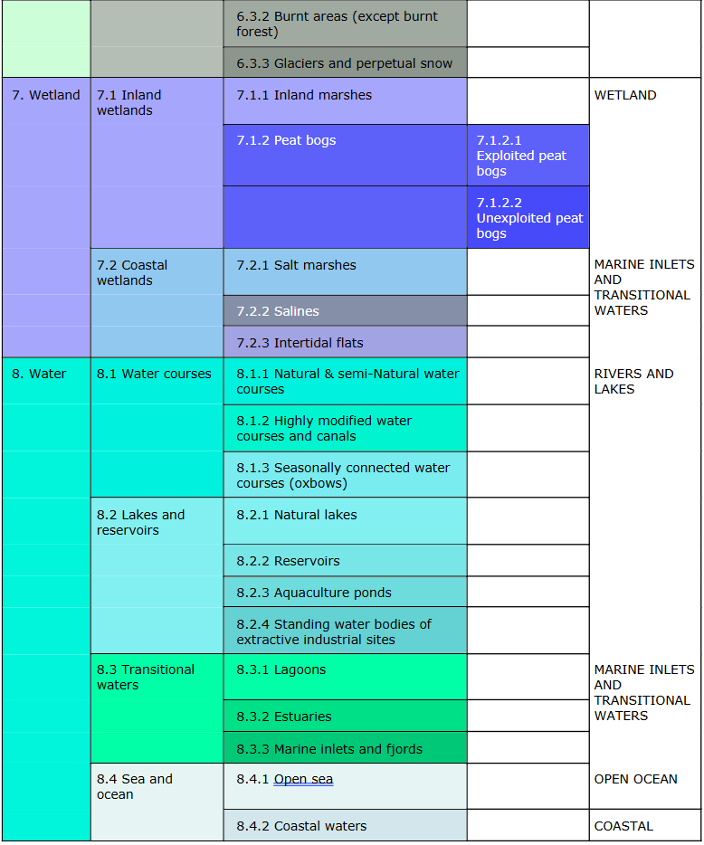
6 Product methodology and workflow
The CLMS N2K production is based on a three-tier approach (Figure 14). The presented workflow is valid for the 2018 production update cycle. Core to the project is the step visual Interpretation and Classification of LC/LU changes with respect to new VHR satellite information for the reference year 2018.
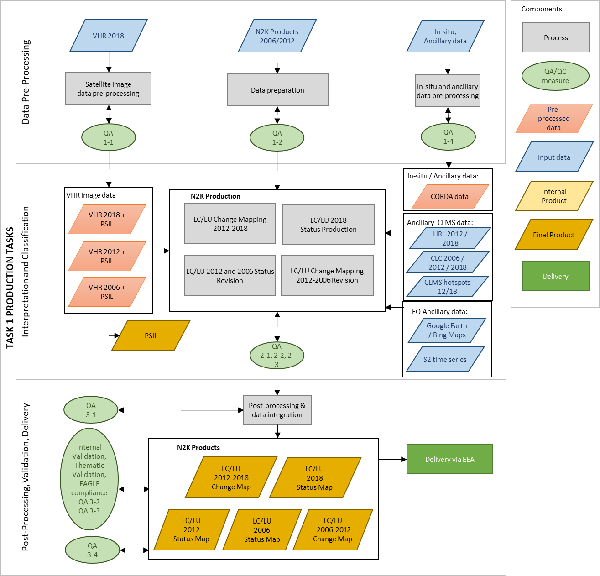
6.1 Data Pre-Processing
During the Data Pre-Processing almost cloud-free VHR optical datasets covering EEA39 (VHR_IMAGE_2018, VHR 2018 Enhanced), are prepared for the status layer 2018 production. This VHR imagery has been acquired within predefined time windows corresponding to the vegetation season 2018 (±1 year), with a spectral resolution comprising visible and NIR bands.
It is a mix of primary satellite missions (Pléiades 1A & 1B, SuperView-1, KOMPSat-3/3-A and PlanetScope) and backup missions (SPOT-6/-7, TripleSat and Deimos-2) at a spatial resolution of 2-4m. Additional in-situ and ancillary datasets relevant for the CLMS N2K production are also integrated into the production workflow to support the LC/LU analysis.
For the change mapping 2012-2018 and the revision of the formerly produced 2006 and 2012 data, the following ESA data sources are used for the reference years 2006 (± 2 years) and 2012 (±2 years):
D2_MG2b_LOLA_011b
DAP_MG2b_01
DWH_MG2_CORE_02
DWH_MG2b_CORE_03
Natura 2000_Data_Procurement
VHR_IMAGE_2015
D2_MG2b_NARA_011b
The satellite data provided via these ESA data sources include different sensor types:
|
|
|
|
|
|
|
|
|
|
|
|
|
|
|
|
Additionally, to overcome cloud problems in restricted areas Sentinel 2 from ESA for 2018 and Landsat 5 and Landsat 8 data from USGS (United States Geological Survey) are used for the reference dates 2006 and 2012 respectively.
6.2 Interpretation and Classification
The Interpretation and Classification procedures follow the mapping rules and principles as stated in the CLMS N2K Nomenclature and Mapping Guideline (AD01). This documentation refers specifically to object delineation; MMU and MMW; feature extraction priority rules; water level mapping rules; handling of geometric inconsistencies between the reference years; inclusion of additional data sources and the application of standardized data attributes. Feature delineation is applied at a 1:5.000 mapping scale.
Mapping LC/LU Status
The LC/LU status is mapped through a visual interpretation and object delineation using the above specified VHR data as primary data source. The type of LC/LU is classified according to the CLMS N2K Nomenclature and Mapping Guideline document (AD01). A minimum mapping unit (MMU) of ≥ 0.5 ha for all objects applies. A minimum width (MMW) of ≥ 10 m is defined. MMU exceptions are allowed for:
Objects located at a CLMS N2K product border: If an object is cut at a border, the feature is mapped, if the whole object (inside and outside the border) would amount to ≥ 0.5 ha. However, the MMU of those divided features lying inside the site shall have a MMU of at least ≥ 0.1 ha. Smaller objects will be generalized.
Complex changes (see changes examples below).
Linear features (roads, railways, rivers) that are split in two or more polygons by other linear elements (e.g. the road/railway network) will be mapped even if the resulting segments are smaller than the MMU in order to preserve the network. However, features < 0.1 ha will be generalized.
Urban objects which are confined by roads or railways. Features < 0.25 ha will be generalized.
MMW exceptions are allowed:
- To maintain continuity of features with mostly linear nature (Codes 1.2.1, 1.2.2, 6.2.1, 6.2.2, 8.1.1 and 8.1.2), the MMW may fall below the limit of 10 m over a distance of up to 100 m.
Mapping LC/LU Changes
Land Cover Changes (LCC) are changes that occur between the different reference timespans 2006 (+/- 2 years), 2012 (+/- 2 years) and the timespan 2018 (+/- 1 year). Differences resulting from different interpretations of the same subject are not considered as change. A change is mapped if it covers over a Minimum Mapping Unit (MMU) of >0.5ha. The mapping is carried out by visual interpretation and comparison of two subsequent reference years (2006-2012, 2012-2018) and their corresponding LC/LU vector data and satellite imagery. Changed areas are directly delineated. In CLMS N2K changes are provided as separate vector products (2006-2012 and 2012-2018).
Possible prone to change areas are, for example:
Construction sites;
Abandoned land/grassland/cropland near urban areas;
Damaged forest indicates that a regrowth of forest should appear;
Transitional woodland indicates that a regrowth of forest should appear.
Interpreters must be aware that not every change visible on the images should be treated as changes, e.g.:
transient phenomena such as floods and temporary water-logging;
seasonal changes in Natural vegetation;
seasonal changes in agriculture, such as effects of crop rotation on arable land;
forest plantation growth, still not reaching the height and/or canopy closure of forest;
seasonal changes of water level;
temporal changes in water cover of fishpond cassettes being part of their management;
seasonal changes of snow spots in high mountains.
The introduction of false changes must also be avoided. Many of these can and should be excluded by pure logics. These vary from country to country (e.g. while normally sea water do not change into pasture, it might happen in the Netherlands), thus following examples are not exhaustive and not binding for all cases. However, in most cases they can be considered valid.
Highly non-probable changes are for example:
Urban areas to non-urban classes (1.1.1 🡺 2.-8.x.x): urban areas seldomly disappear
Conversion of a highly modified water course (e.g. canal) to a new class (8.1.2 🡺 X.X.X)
Being the most frequently occurring change type, changes > 0.5 ha connected to an existing CLMS N2K polygon are always mapped. In the following example scheme an existing urban site has been enlarged by more than 0.5ha between the reference year t0 (1.1.1) and the reference year t+1.
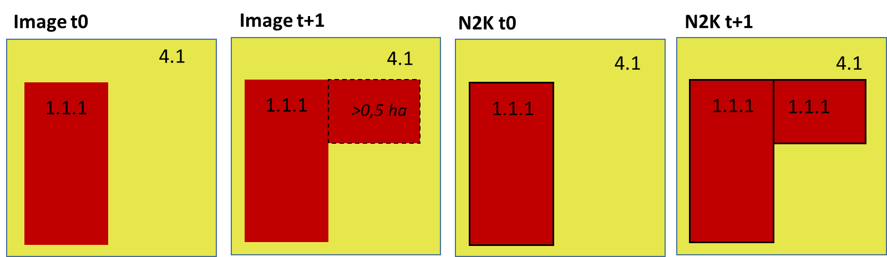
Although the MMU for change mapping is 0.5 ha, in some cases single changes < 0.5 ha are also mapped together. When a polygon, existing for the reference year t0, is split at the later t1 reference into several other areas (e.g. a road construction, urban growth, …), the individually connected change parts can be mapped together, if they make up a ≥ 0.5 ha complex change polygon. Resulting polygons in the database <0.5ha receive the COMMENT attribute “Area size exception (inside Natura2000 AoI boundary)” (see chapter Technical specification and AD01).
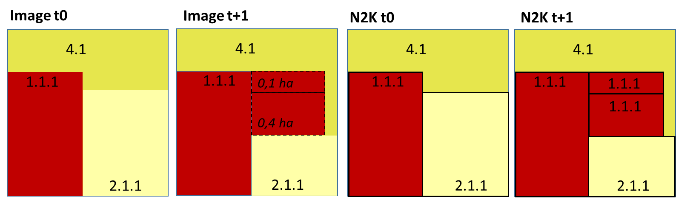
“Splitted” changes can also lead to change polygons <0.5ha. In the example scheme below, an existing industrial site exists in the image t0, but is not mapped in the CLMS N2K product for t0, because it is below the MMU (<0.5ha). The site has enlarged between t0 and t+1 and now forms together an area >0.5ha. The small industrial area from t0 “changes” now as well and forms together with the actual change a complex change area. The formerly too small area receives the COMMENT “Splitted change”.
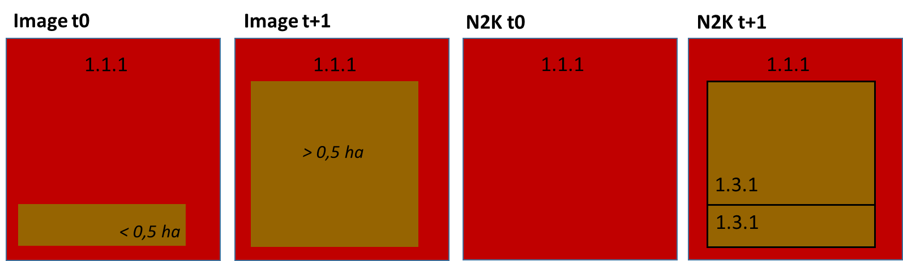
Exceptions for a polygon <0.5 ha are also allowed for unchanged areas in relation to a change situation. In the following example, an existing road in t0 is relocated. Previous road sections change to an urban class (1.1.1) and previous urban area changes to new road (1.2.1) in t+1. A small road section (<0.5 ha) remains as road over the years and does not change. It gets the comment “Areas related to change” in the CLMS N2K product.
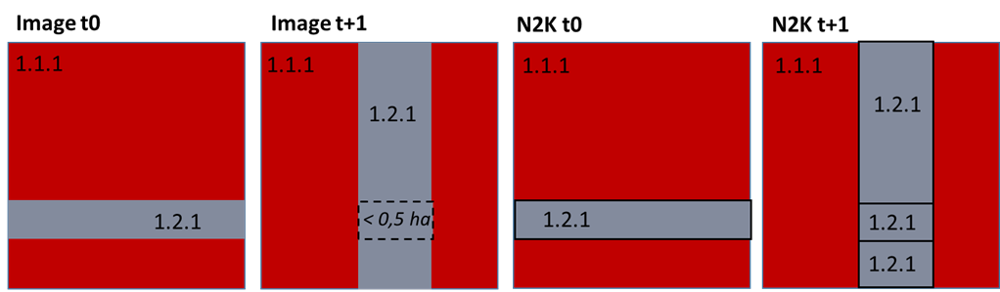
7 Quality assessment
7.1 Internal thematic validation
For each CLMS N2K product a thematic validation was performed by the service providers (internal thematic validation). The assessment is based on a scientifically and statistically sound stratification and sampling scheme, tailored to assessing the thematic accuracy of the N2K LC/LU status and change layers.
During the production phase of the 2018 update the following accuracies applied to these products:
CLMS N2K LC/LU status map 2012 and 2018: ≥ 85 % overall accuracy and ≥ 80 % for class-specific user’s and producer’s accuracies
CLMS N2K LC/LU change map 2012-2018: ≥ 85 % overall accuracy and ≥ 80 % for class-specific user’s and producer’s accuracies
The 2012 and 2006 products have been validated after the production phase by an independent service provider (see AD 02).
Sampling Design and Stratification
The thematic accuracy assessment for the CLMS N2K is based on a stratified random point sampling scheme, in which all areas have a known non-zero probability of sampling. To assess overall and class-specific accuracies, stratifications are conducted on the LC/LU code level 4 (status layer), as well as on omission and commission strata (change layer).
Response Design
All sample points were re-interpreted at Code level 4 during the validation. This step was performed as a visual interpretation by independent, well-trained operators, who were not involved in the production itself, using the applicable Very High-Resolution (VHR) satellite data defined in the production. When re-interpreting the LC/LU sample points, the response design had to respect the latest product specifications and N2K nomenclature guidelines.
Validation results
To keep full statistical rigor and representativeness, and account for unequal inclusion probabilities and the relative occurrence of classes, area related weights were applied according to the area ratio for each class compared to the overall area. To deal with very imbalanced and skewed ratios between changed and unchanged areas at class level 1, an area restriction was implemented to reduce the area weight of polygons > 100ha.
The results of the internal validation proved the sufficient thematic quality of CLMS N2K products, as can be seen in the following tables.
Full details on the class specific user and producer accuracy results can be found in the ANNEX of this document.
| Thematic accuracy [%] | Confidence* Interval | No. of assessed sample points | |
|---|---|---|---|
| LC/LU 2012 overall unweighted accuracy | 96.52 % | 0.20 % | 30 203 |
| LC/LU 2018 overall unweighted accuracy | 96.22 % | 0.21 % | 30 203 |
| LC/LU change 2012-2018 overall unweighted accuracy for level 4 | 97.85 % | 0.16 % | 29 088 |
| LC/LU change 2012-2018 overall unweighted accuracy for level 1 | 98.61 % | 0.13 % | 29 088 |
*at a 95% confidence level
| Thematic accuracy [%] | Confidence* Interval | No. of assessed sample points | |
|---|---|---|---|
| LC/LU 2012 overall weighted accuracy | 96.80 % | 0.21 % | 30 203 |
| LC/LU 2018 overall weighted accuracy | 96.67 % | 0.21 % | 30 203 |
| LC/LU change 2012-2018 overall weighted accuracy for level 4 | 98.64 % | 0.12 % | 29 088 |
| LC/LU change 2012-2018 overall weighted accuracy for level 1 | 99.33 % | 0.08 % | 29 088 |
*at a 95% confidence level
| User’s Accuracy | Producer’s Accuracy | |||||||
|---|---|---|---|---|---|---|---|---|
| Code Level 1 | Non-Change | CI [%] | Change | CI [%] | Non-Change | CI [%] | Change | CI [%] |
| Class 1 | 99.56 | 0.21 | 95.47 | 1.29 | 98.78 | 0.34 | 98.34 | 0.80 |
| Class 2 | 99.66 | 0.20 | 96.57 | 1.10 | 98.89 | 0.35 | 98.93 | 0.63 |
| Class 3 | 99.95 | 0.06 | 94.95 | 1.33 | 98.82 | 0.31 | 99.80 | 0.28 |
| Class 4 | 100.00 | 0.00 | 92.94 | 1.37 | 94.56 | 1.00 | 100.00 | 0.00 |
| Class 5 | 100.00 | 0.00 | 96.30 | 1.20 | 97.83 | 0.69 | 100.00 | 0.00 |
| Class 6 | 99.41 | 0.32 | 95.11 | 1.50 | 98.24 | 0.53 | 98.31 | 0.90 |
| Class 7 | 100.00 | 0.00 | 93.76 | 2.28 | 98.12 | 0.67 | 100.00 | 0.00 |
| Class 8 | 99.68 | 0.18 | 96.64 | 1.53 | 99.53 | 0.21 | 97.73 | 1.25 |
| User’s Accuracy | Producer’s Accuracy | |||||||
|---|---|---|---|---|---|---|---|---|
| Code Level 1 | Non-Change | CI [%] | Change | CI [%] | Non-Change | CI [%] | Change | CI [%] |
| Class 1 | 99.56 | 0.21 | 95.47 | 1.29 | 99.72 | 0.08 | 93.07 | 3.15 |
| Class 2 | 99.66 | 0.20 | 96.57 | 1.10 | 99.63 | 0.12 | 96.82 | 1.82 |
| Class 3 | 99.95 | 0.06 | 94.95 | 1.33 | 99.31 | 0.18 | 99.65 | 0.48 |
| Class 4 | 100.00 | 0.00 | 92.94 | 1.37 | 98.18 | 0.35 | 100.00 | 0.00 |
| Class 5 | 100.00 | 0.00 | 96.30 | 1.20 | 99.78 | 0.07 | 100.00 | 0.00 |
| Class 6 | 99.41 | 0.32 | 95.11 | 1.50 | 99.61 | 0.12 | 92.72 | 3.66 |
| Class 7 | 100.00 | 0.00 | 93.76 | 2.28 | 99.68 | 0.12 | 100.00 | 0.00 |
| Class 8 | 99.68 | 0.18 | 96.64 | 1.53 | 99.91 | 0.04 | 89.19 | 5.45 |
| User’s Accuracy | Producer’s Accuracy | |||||||
|---|---|---|---|---|---|---|---|---|
| Code Level 1 | Non-Change | CI [%] | Change | CI [%] | Non-Change | CI [%] | Change | CI [%] |
| Class 1 | 99.56 | 0.21 | 95.47 | 1.29 | 99.95 | 0.01 | 80.47 | 10.18 |
| Class 2 | 99.66 | 0.20 | 96.57 | 1.10 | 99.98 | 0.01 | 62.30 | 13.86 |
| Class 3 | 99.95 | 0.06 | 94.95 | 1.33 | 99.93 | 0.02 | 96.70 | 4.43 |
| Class 4 | 100.00 | 0.00 | 92.94 | 1.37 | 99.94 | 0.01 | 100.00 | 0.00 |
| Class 5 | 100.00 | 0.00 | 96.30 | 1.20 | 99.95 | 0.02 | 100.00 | 0.00 |
| Class 6 | 99.41 | 0.32 | 95.11 | 1.50 | 99.93 | 0.02 | 78.89 | 11.62 |
| Class 7 | 100.00 | 0.00 | 93.76 | 2.28 | 99.97 | 0.01 | 100.00 | 0.00 |
| Class 8 | 99.68 | 0.18 | 96.64 | 1.53 | 99.99 | 0.01 | 53.48 | 14.06 |
7.2 Quality Assurance (QA) and Quality Control (QC) measures
All CLMS N2K products have been produced by service providers with accredited ISO 9001:2015 quality standard management systems. All QA/QC procedures comprise dedicated ongoing quality checks for the various stages of the production workflow, to keep permanent control over the processes and ensure that all quality requirements are constantly met. This includes checks on:
Data validity & readability
Thematic & Geometric accuracy & consistency
Logical / topologic consistency
Radiometric quality, cloud coverage, haze, shadows, snow and other data gaps of EO data
Thematic coding/attributes
Seamless geographic coverage / data completeness
Impossible, or unlikely change combination
Processing infrastructure performance and backup functionality
Metadata completeness and output compliance to INSPIRE
EAGLE compliance of the data model
Besides these internal QA/QC checks by the producing service providers all CLMS N2K products underwent a QC check and approval via the EEA Copernicus Quality tools, a web-based online system designed to quality-check map layers to be submitted to the EEA (https://github.com/eea/copernicus_quality_tools).
7.3 External independent validation
The objective of the external independent validation of CLMS N2K data is to derive thematic accuracy figures, to assess if dataset has reached the accuracy targets.
Its main goal is to inform users of the databases about quality in quantitative terms. Validation must be based on independent, very-high resolution in-situ data as reference. The date of in-situ data should coincide as much as possible with the acquisition date of satellite images used to derive the N2K product. In-situ data used in the validation should be independent, i.e. must not have been used in compilation of the N2K databases. Experts working on validation also should be independent, not having participated in the mapping exercise.
Validation in the N2K context means thematic validation.
Not yet performed at the time of writing this report.
8 Terms of use and product technical support
8.1 Terms of use
The product(s) described in this document is/are created in the frame of the Copernicus programme of the European Union by the European Environment Agency (product custodian) and is/are owned by the European Union. The product(s) can be used following Copernicus full free and open data policy, which allows the use of the product(s) also for any commercial purpose. Derived products created by end users from the product(s) described in this document are owned by the end users, who have all intellectual rights to the derived products.
8.2 Citation
In cases of re-dissemination of the product(s) described in this document or when the product(s) is/are used to create a derived product it is required to provide a reference to the source. A template is provided below:
“© European Union, Copernicus Land Monitoring Service <year>, European Environment Agency (EEA)"
8.3 Product technical support
Product technical support is provided by the product custodian through Copernicus Land Monitoring Service helpdesk at copernicus@eea.europa.eu. Product technical support doesn’t include software specific user support or general GIS or remote sensing support.
9 References
EC 2019: The European Commission, information. COMMISSION STAFF WORKING DOCUMENT. Expression of User Needs for the Copernicus Programme. Information available at under: https://knowledge4policy.ec.europa.eu/publication/commission-staff-working-document-expression-user-needs-copernicus-programme_en
EC 2020: EU Biodiversity Strategy for 2030. Bringing nature back into our lives. COM(2020) 380 final. Information available at https://eur-lex.europa.eu/legal-content/EN/TXT/?qid=1590574123338&uri=CELEX%3A52020DC0380
EEA 1995: European Environment Agency, Corine Land Cover, 01 January 1995. Information available at https://www.eea.europa.eu/publications/COR0-landcover.
EEA 2019: The European environment — state and outlook 2020. Knowledge for transition to a sustainable Europe. Information available at https://www.eea.europa.eu/publications/soer-2020
ETC-ULS 2020: Contributions to building a coherent Trans-European Nature Network. Information available at https://www.eea.europa.eu/themes/biodiversity/green-infrastructure/building-a-coherent-trans-european/contributions-to-building-a-coherent/view
EU 2013: Mapping and Assessment of Ecosystems and their Services. An analytical framework for ecosystem assessments under Action 5 of the EU Biodiversity Strategy to 2020. Information available at https://ec.europa.eu/environment/nature/knowledge/ecosystem_assessment/pdf/MAESWorkingPaper2013.pdf
10 Annexes
Class specific thematic validation results for the 2018 update production phase
| Code Level 4 | User’s Accuracy | No. of assessed sample points | Producer’s Accuracy | No. of assessed sample points | ||
|---|---|---|---|---|---|---|
| Accuracy [%] | Confidence Interval [%] | Accuracy [%] | Confidence Interval [%] | |||
| 1110 | 97.86 | 1.20 | 561 | 97.31 | 1.27 | 561 |
| 1120 | 98.06 | 1.01 | 721 | 96.21 | 1.31 | 721 |
| 1210 | 98.57 | 0.93 | 629 | 99.20 | 0.50 | 629 |
| 1220 | 98.37 | 1.12 | 490 | 98.71 | 1.29 | 490 |
| 1230 | 98.68 | 1.28 | 304 | 98.60 | 1.92 | 304 |
| 1240 | 99.52 | 0.66 | 418 | 99.34 | 0.91 | 418 |
| 1310 | 96.76 | 1.04 | 1111 | 93.93 | 1.69 | 1111 |
| 1320 | 86.78 | 3.26 | 416 | 98.01 | 1.51 | 416 |
| 1400 | 94.57 | 1.92 | 534 | 98.65 | 0.94 | 534 |
| 2110 | 98.48 | 0.58 | 1711 | 94.19 | 1.07 | 1711 |
| 2120 | 92.08 | 2.77 | 366 | 99.59 | 0.81 | 366 |
| 2210 | 98.36 | 0.96 | 670 | 98.33 | 0.76 | 670 |
| 2220 | 98.57 | 1.13 | 421 | 99.31 | 0.70 | 421 |
| 2310 | 88.43 | 3.84 | 268 | 100.00 | 0.00 | 268 |
| 2320 | 93.81 | 2.27 | 436 | 98.16 | 1.20 | 436 |
| 2330 | 93.78 | 2.20 | 466 | 98.81 | 0.98 | 466 |
| 2340 | 90.25 | 3.07 | 359 | 99.61 | 0.56 | 359 |
| 3110 | 99.03 | 0.67 | 828 | 94.71 | 1.17 | 828 |
| 3120 | 96.09 | 1.94 | 384 | 98.37 | 1.64 | 384 |
| 3210 | 98.99 | 0.75 | 693 | 94.69 | 1.36 | 693 |
| 3220 | 93.40 | 2.80 | 303 | 98.63 | 2.65 | 303 |
| 3310 | 96.91 | 1.54 | 486 | 99.14 | 0.63 | 486 |
| 3320 | 83.78 | 8.46 | 74 | 100.00 | 0.00 | 74 |
| 3400 | 95.56 | 0.91 | 1984 | 87.86 | 1.63 | 1984 |
| 3500 | 97.78 | 1.36 | 450 | 99.34 | 0.90 | 450 |
| 3600 | 68.60 | 5.67 | 258 | 99.19 | 1.12 | 258 |
| 4100 | 97.77 | 1.02 | 808 | 96.30 | 1.15 | 808 |
| 4211 | 88.93 | 3.87 | 253 | 89.36 | 3.30 | 253 |
| 4212 | 95.25 | 1.14 | 1348 | 92.27 | 1.39 | 1348 |
| 4220 | 99.11 | 1.01 | 336 | 97.29 | 1.39 | 336 |
| 5100 | 97.50 | 1.17 | 680 | 98.13 | 0.92 | 680 |
| 5200 | 97.33 | 1.43 | 487 | 98.72 | 0.84 | 487 |
| 5300 | 96.68 | 1.15 | 933 | 96.71 | 1.14 | 933 |
| 6100 | 92.37 | 1.74 | 891 | 96.34 | 1.35 | 891 |
| 6210 | 92.34 | 2.44 | 457 | 97.36 | 2.52 | 457 |
| 6220 | 95.43 | 1.63 | 635 | 98.73 | 1.22 | 635 |
| 6310 | 96.04 | 1.62 | 555 | 98.78 | 0.63 | 555 |
| 6320 | 92.50 | 2.21 | 547 | 100.00 | 0.00 | 547 |
| 6330 | 98.14 | 2.10 | 161 | 100.00 | 0.00 | 161 |
| 7110 | 97.63 | 1.38 | 465 | 96.51 | 1.39 | 465 |
| 7121 | 96.04 | 3.82 | 101 | 100.00 | 0.00 | 101 |
| 7122 | 100.00 | 0.00 | 168 | 98.92 | 1.24 | 168 |
| 7210 | 98.43 | 1.15 | 446 | 99.77 | 0.45 | 446 |
| 7220 | 100.00 | 0.00 | 408 | 100.00 | 0.00 | 408 |
| 7230 | 100.00 | 0.00 | 202 | 97.92 | 2.89 | 202 |
| 8110 | 98.97 | 0.76 | 681 | 97.57 | 0.90 | 681 |
| 8120 | 97.62 | 1.39 | 462 | 99.83 | 0.34 | 462 |
| 8130 | 94.21 | 2.30 | 397 | 98.48 | 2.07 | 397 |
| 8210 | 97.71 | 0.95 | 959 | 97.85 | 0.64 | 959 |
| 8220 | 95.39 | 1.84 | 499 | 96.11 | 2.85 | 499 |
| 8230 | 91.24 | 3.05 | 331 | 100.00 | 0.00 | 331 |
| 8240 | 98.24 | 1.08 | 567 | 97.08 | 2.26 | 567 |
| 8310 | 99.65 | 0.68 | 287 | 98.69 | 1.03 | 287 |
| 8320 | 99.63 | 0.72 | 273 | 100.00 | 0.00 | 273 |
| 8400 | 97.86 | 1.20 | 525 | 98.01 | 0.76 | 525 |
| Code Level 4 | User’s Accuracy | No. of assessed sample points | Producer’s Accuracy | No. of assessed sample points | ||
|---|---|---|---|---|---|---|
| Accuracy [%] | Confidence Interval [%] | Accuracy [%] | Confidence Interval [%] | |||
| 1110 | 98.26 | 1.19 | 461 | 97.09 | 1.34 | 461 |
| 1120 | 97.66 | 1.37 | 470 | 96.79 | 1.29 | 470 |
| 1210 | 99.42 | 0.66 | 514 | 98.85 | 0.67 | 514 |
| 1220 | 98.30 | 1.17 | 470 | 99.11 | 1.02 | 470 |
| 1230 | 98.65 | 1.31 | 297 | 98.14 | 2.53 | 297 |
| 1240 | 99.50 | 0.69 | 399 | 99.24 | 1.05 | 399 |
| 1310 | 96.72 | 0.90 | 1523 | 95.59 | 1.42 | 1523 |
| 1320 | 85.40 | 3.64 | 363 | 96.08 | 3.31 | 363 |
| 1400 | 94.21 | 2.01 | 518 | 98.66 | 1.05 | 518 |
| 2110 | 97.91 | 0.66 | 1816 | 91.29 | 1.27 | 1816 |
| 2120 | 92.51 | 2.83 | 334 | 99.49 | 1.00 | 334 |
| 2210 | 90.16 | 2.37 | 610 | 97.97 | 0.92 | 610 |
| 2220 | 98.50 | 1.20 | 399 | 98.86 | 0.93 | 399 |
| 2310 | 88.43 | 3.84 | 268 | 100.00 | 0.00 | 268 |
| 2320 | 93.85 | 2.25 | 439 | 98.17 | 1.20 | 439 |
| 2330 | 93.58 | 2.19 | 483 | 98.91 | 0.95 | 483 |
| 2340 | 90.74 | 2.93 | 378 | 99.36 | 0.76 | 378 |
| 3110 | 98.72 | 0.62 | 1247 | 95.68 | 1.03 | 1247 |
| 3120 | 96.08 | 1.95 | 383 | 99.51 | 0.96 | 383 |
| 3210 | 99.07 | 0.54 | 1189 | 95.89 | 1.15 | 1189 |
| 3220 | 93.13 | 2.91 | 291 | 91.18 | 11.23 | 291 |
| 3310 | 97.83 | 1.22 | 553 | 99.17 | 0.63 | 553 |
| 3320 | 83.78 | 8.46 | 74 | 100.00 | 0.00 | 74 |
| 3400 | 96.31 | 1.30 | 812 | 88.52 | 1.76 | 812 |
| 3500 | 97.78 | 1.36 | 451 | 98.84 | 1.30 | 451 |
| 3600 | 87.39 | 4.23 | 238 | 100.00 | 0.00 | 238 |
| 4100 | 97.52 | 0.98 | 969 | 97.52 | 0.86 | 969 |
| 4211 | 91.32 | 3.40 | 265 | 92.04 | 2.86 | 265 |
| 4212 | 95.10 | 1.14 | 1388 | 93.28 | 1.32 | 1388 |
| 4220 | 98.56 | 1.26 | 347 | 97.19 | 1.43 | 347 |
| 5100 | 97.95 | 0.97 | 828 | 98.19 | 0.95 | 828 |
| 5200 | 97.58 | 1.30 | 537 | 98.71 | 0.89 | 537 |
| 5300 | 97.11 | 0.99 | 1108 | 96.16 | 1.22 | 1108 |
| 6100 | 91.80 | 1.86 | 841 | 96.69 | 1.37 | 841 |
| 6210 | 97.59 | 1.48 | 415 | 94.54 | 2.90 | 415 |
| 6220 | 96.93 | 1.40 | 586 | 98.78 | 1.21 | 586 |
| 6310 | 96.08 | 1.61 | 561 | 98.97 | 0.56 | 561 |
| 6320 | 96.53 | 1.58 | 519 | 100.00 | 0.00 | 519 |
| 6330 | 98.20 | 2.02 | 167 | 100.00 | 0.00 | 167 |
| 7110 | 97.90 | 1.18 | 572 | 97.51 | 1.22 | 572 |
| 7121 | 98.31 | 1.91 | 177 | 100.00 | 0.00 | 177 |
| 7122 | 100.00 | 0.00 | 164 | 99.66 | 0.67 | 164 |
| 7210 | 95.92 | 1.67 | 539 | 99.74 | 0.50 | 539 |
| 7220 | 100.00 | 0.00 | 396 | 100.00 | 0.00 | 396 |
| 7230 | 100.00 | 0.00 | 201 | 98.69 | 2.53 | 201 |
| 8110 | 98.99 | 0.75 | 693 | 99.08 | 0.61 | 693 |
| 8120 | 97.36 | 1.54 | 416 | 99.84 | 0.31 | 416 |
| 8130 | 94.32 | 2.17 | 440 | 99.25 | 1.45 | 440 |
| 8210 | 99.25 | 0.65 | 671 | 98.04 | 0.60 | 671 |
| 8220 | 95.08 | 1.92 | 488 | 99.81 | 0.37 | 488 |
| 8230 | 93.01 | 2.76 | 329 | 99.19 | 1.24 | 329 |
| 8240 | 97.52 | 1.33 | 525 | 98.65 | 2.01 | 525 |
| 8310 | 99.62 | 0.75 | 263 | 98.30 | 1.33 | 263 |
| 8320 | 99.63 | 0.72 | 273 | 100.00 | 0.00 | 273 |
| 8400 | 99.62 | 0.53 | 521 | 99.48 | 0.42 | 521 |